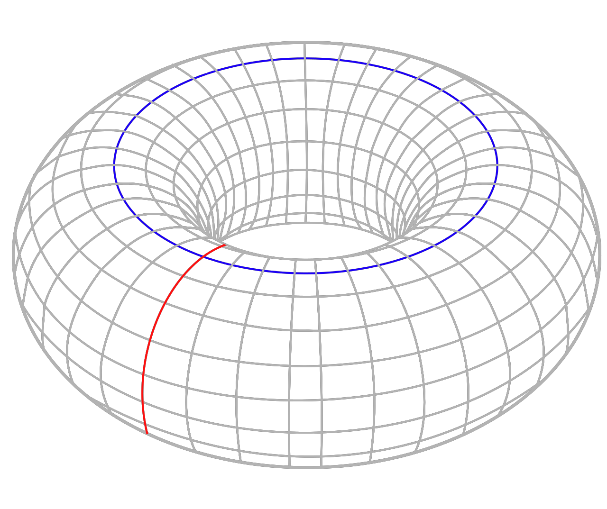

一文入门微分几何（物理人版）
前言
作为物理人，你很可能听过张量，微分形式，李代数 … 等等概念的其中一个或者多个。但是你可能像我一样，每次听到这些概念的时候都感觉云里雾里。因此，本文旨在帮助物理人，为这些彼此紧密联系的诸概念进行一个梳理。
本文的结构如下：
a. 在第一章中，我们引入物理学的舞台：微分流形，并定义流形上的标量场。
b. 在第二章中，我们引入切空间和切丛等概念，并定义流形上的矢量场和张量场。最后，我们还定义内积和度规张量，它们是通往黎曼流形和广义相对论的门票。
c. 在第三章中，我们引入外积、外代数等概念，并在流形上研究微分（外微分）。最后，我们介绍一下 Hodge 对偶，它将内积与外积一种美妙的方式联系起来。
d. 在第四章中，我们引入两种导数，即协变导数和李导数。
协变导数描述了流形上的联络，并可以用来定义平移、测地线和曲率。基于这些概念，我们就可以简要介绍广义相对论；
李导数描述了流形上向量场的“流动”，它是非常有用的一个概念，可以用来漂亮地定义散度、挠率、曲率等等概念。
e. 在第五章中，我们引入单形、链等概念，并在流形上研究积分。另外，我们简单介绍同调和上同调，它们用来研究流形上的“孔洞”。
f. 在第六章中，我们引入作为微分流形的群——李群，并研究李群的切空间——李代数，并介绍它们在物理学中的应用。
以下是一些关于本文的声明和注意事项：
a. 免责声明
本文只是我的笔记。我假想了读者的存在，这不仅有可能帮助到其他人，而且可以加深我自己的理解。然而，正因为本文只是一个笔记，所以难免会出错。如果读者发现了任何事实错误，请及时指出，我会及时修改，避免误导他人。
b. 目标读者
本文需要的前置知识有：初等微积分、初等线性代数、（可选）向量微积分。
如果读者是物理系的，那么效果最佳。本文适合物理系大二及以上的学生阅读，竞赛生除外。
如果读者是数学系的，也完全欢迎阅读、提出意见、指出错误。
严谨性与易懂性永远是对立和互补的。本文为了易懂，难免在语言上牺牲一些严谨性。因此请数学系读者包容。我会尽可能将严谨性的损失降到最低。
c. 阅读建议
本文旨在梳理概念，因此不推荐作为教程来阅读。当然，如果你只是感兴趣，那么阅读本文绝对是没有坏处的。
在本文的正文中，穿插着很多对概念的解读和补充。为了不影响对正文的阅读，它们会被冠以“评论”的标题，并以不同的样式展示。
在本文的正文中，还穿插一些“选读”段落。“不求甚解”的读者可以跳过它们，“刨根问底”的读者可以阅读它们。
本文附带一个目录，高级的读者可以浏览目录，并直接跳到感兴趣的章节阅读。
第一章 流形和流形上的标量场
本章介绍微分流形及其涉及的前置知识。具体来说，本章首先介绍拓扑空间，其次介绍拓扑流形，最后介绍微分流形，以及微分流形上的标量场。每一个概念都建立在前一个概念的基础之上。
1.1 拓扑（Topology）
非空集合 X 的 拓扑 定义为 X 的子集的集合 $\mathcal{F}$ ，且 $\mathcal{F}$ 满足如下三条性质：
a. $\emptyset，X \in \mathcal{F}$ ；
b. $\mathcal{F}$ 中有限个元素的交集仍在 $\mathcal{F}$ 中；
c. $\mathcal{F}$ 中任意多元素的并集仍在 $\mathcal{F}$ 中。
评论
我是本文的第一个“评论”。在本文中，“评论”指的是对概念的解读和补充。现在我们就来解读一下拓扑这个概念。
拓扑就是一个集合 $\mathcal{F}$ ，这个集合 $\mathcal{F}$ 里的元素是另一个集合 $X$ 的一些子集。当然，这些子集不是从 $X$ 里随意选取的，而是要满足一定的要求。具体来说，它们要满足对有限次的交运算，以及任意次的并运算是封闭的。另外，规定空集和 $X$ 本身也在拓扑中。
如果你还懂一点集合论，那你应该可以看出，拓扑就是一个集合的幂集的子集。
下面来看一些例子。
例 1.1
$\{\emptyset,\{1,2,3\}\}$ 是集合 $\{1,2,3\}$ 的一个拓扑。
$\{\emptyset,\{1,2,3\},\{1\}\}$ 是集合 $\{1,2,3\}$ 的一个拓扑。
$\{\emptyset,\{1,2,3\},\{1\},\{2\},\{1,2\}\}$ 是集合 $\{1,2,3\}$ 的一个拓扑。
$\{\emptyset,\{1,2,3\},\{1\},\{2\},\{3\},\{1,2\},\{1,3\},\{2,3\}\}$ 是集合 $\{1,2,3\}$ 的一个拓扑。
例 1.2
初等微积分中的 $\mathbb{R}^n$ 中的所有开集是它的一个拓扑。
1.2 拓扑空间（Topological Space）
定义了拓扑的集合叫做拓扑空间。更具体地，拓扑空间定义为 $(X,\mathcal{F})$，其中 $\mathcal{F}$ 是 $X$ 的一个拓扑。
拓扑里的元素叫做拓扑空间中的开集。
评论
拓扑使得我们不需要依赖度量也可以定义开集。在拓扑学中，我们将分析学里的开集的“有限交”和“无限并”的性质抽象出来，用来定义开集本身。
如果上下文允许，我们可以直接将 $X$ 叫做拓扑空间，而不用将 $(X,\mathcal{F})$ 写出来。
选读 1.2
你可能想问，为什么我们不用“可数交”和“有限并”来定义闭集，然后以此来定义拓扑呢？为什么选择开集，而不是闭集？我想这可能涉及各种历史因素，详见这个问题。
1.3 连续（Continuity）
设 $(X,\mathcal{F})$ 和 $(Y,\mathcal{S})$ 是拓扑空间， $f:X\rightarrow Y$ 是一个映射。如果 $\forall O \in \mathcal{S} \,(f^{-1}[O] \in \mathcal{F})$ ，则称 $f$ 是连续的。其中 $f^{-1}[O]$ 代表 O 在 $f$ 下的原像（Inverse Image）。
评论
连续的意思就是“开集的原像仍是开集”。这和分析学中连续的定义非常不同。
集合 $O\in Y$ 在映射 $f:X\rightarrow Y$ 下的原像 $f^{-1}[O]$ 定义为： $f^{-1}[O]=\{x\in X\mid f(x)\in O \}$
在数学中，原像一般使用圆括号 $f^{-1}(O)$ ，但本文为了将其与逆映射作区分，使用了中括号的写法：$f^{-1}[O]$。
例 1.3
在例 1.2 中的拓扑上，映射
$$ f:\mathbb{R}\rightarrow\mathbb{R}, \,f(x)=\begin{cases}1, & x>0 \\ 0, & x=0 \\ -1, & x<0\end{cases}$$ 不是一个连续映射，因为开集 $\{x\in \mathbb{R}\mid -1<x<1\}$ 在映射 f 下的原像为 $\{0\}$ ，不是一个开集。
1.4 同胚（Homeomorphism）
若 $f:X\rightarrow Y$ 是一个双射，且 $f$ 和 $f^{-1}$ 都是连续的，则称 $f$ 是从 $X$ 到 $Y$ 的一个同胚。
如果存在从 $X$ 到 $Y$ 的同胚，那么我们也可以说， $X$ 与 $Y$ 同胚。
评论
同胚就是双连续的双射。当我们说一个（带把的）咖啡杯与一个甜甜圈同胚的时候，我们实际在说二者的点可以建立一一对应关系，也就是双射，并且这个双射是双向连续的。
没有什么东西可以阻止你在一个（球形）糖果和一个甜甜圈之间建立双射。但是有一点是肯定的，这样的双射一定不是双连续的。也就是说，甜甜圈不同胚于一个糖果。
1.5 邻域（Neighborhood）
如果 $X$ 是一个拓扑空间， $p \in X$ 且 $p \in O \subseteq N \subseteq X$ ，其中 $O$ 是一个开集，则称 $N$ 是 $p$ 的一个邻域。
评论
注意，邻域本身不一定必须是开集。如果一个邻域是开集，那么可以称它为开邻域。
当然，有些作者把邻域定义成开邻域，这取决于你在看哪本书。在数学中，对同一个概念有着许多不同的定义，这没关系，关键是要保持上下文的一致性。
1.6 豪斯多夫空间（Hausdorff Space）
如果对于拓扑空间 $X$ 的任意两个元素 $x,y$ ，都可以找到 $x$ 的邻域 $U$ 和 $y$ 的邻域 $V$ ，使得 $U\cap V=\emptyset$ ，则称 $X$ 是一个豪斯多夫空间。
评论
说实在的，当我第一次看到豪斯多夫空间的定义时，我根本想象出来有什么空间不是豪斯多夫空间。
它的性质非常好，以至于我们后面介绍的流形，在定义上都属于豪斯多夫空间。
1.7 拓扑流形（Topological Manifold）
若豪斯多夫拓扑空间 $M$ 有可数开覆盖 $M=\bigcup_\alpha O_\alpha$（ $O_\alpha$ 为开集），且每一个 $O_\alpha$ 都同胚于 $\mathbb{R}^n$ 的一个开子集（这个 $\mathbb{R}^n$ 的拓扑是传统意义上的欧几里得拓扑），则称 $M$ 为一个 $n$ 维的拓扑流形。
评论
简单来说，如果 $M$ 在每一个局部都同胚于（欧几里得意义上的） $\mathbb{R}^n$ 的一个开子集，则将 $M$ 称为拓扑流形。
这里所说的“欧几里得意义上的拓扑”指的是我们在初等多元微积分中都学过的那种用欧式度量所定义的点集拓扑。由于本文假定读者学过初等微积分，因此不再赘言。
拓扑流形在局部看起来像是 $\mathbb{R}^n$，但是从全局来看，可能和 $\mathbb{R}^{n}$ 很不一样。例如一个“甜甜圈”的表面，它的局部看起来像是 $\mathbb{R}^2$ ，但是整体来看和 $\mathbb{R}^2$ 是完全不同的。
之所以引入拓扑流形，是因为我们想为上面的每个点都分配一个坐标。
对于拓扑流形上的每一点 $p \in O_\alpha$ ，都有一个同胚 $\varphi_\alpha: O_\alpha \rightarrow \varphi_\alpha[O_\alpha] \subseteq \mathbb{R}^n$ 为其分配了一个坐标。
然而，用一组坐标系往往是不够的，我们需要多组坐标系 ($O_\alpha,\varphi_\alpha$) 来覆盖整个拓扑空间。
开覆盖的重合部分 $O_\alpha \cap O_\beta$ 中的点有两套坐标。利用映射 $\varphi_\beta\circ\varphi_\alpha^{-1}:\varphi_\alpha[O_\alpha \cap O_\beta]\rightarrow \varphi_\beta[O_\alpha \cap O_\beta]$ 可以在两套坐标系之间进行坐标变换。
这一系列开集 $O_\alpha$ 以及对应的同胚 $\varphi_\alpha$ 叫做图册（Atlas）。更具体地，图册定义为所有坐标系 ($O_\alpha,\varphi_\alpha$) 的集合。
评论
在很多书籍中， $\varphi_\alpha$ 的方向是从 $\mathbb{R}^n$ 的开子集到流形 $M$ 的开子集的，即 $\varphi_\alpha:V_\alpha\subseteq \mathbb{R}\rightarrow M $。它的方向与我们上文定义的方向相反。这样一来，坐标变换就会写成 $\varphi_\beta^{-1}\circ\varphi_\alpha$ ，而不是 $\varphi_\beta\circ\varphi_\alpha^{-1}$ 。不过，由于 $\varphi$ 是一个双射，所以它的方向并不重要。读者从上下文中自行判断方向即可。
评论
从现在开始，我们用的符号会逐渐变得抽象。你可能需要时不时地停下来，好好思考每一个符号分别代表了什么意思。也就是说，你不能再将本文当做是科普文或者小说来阅读。
1.8 微分流形（Differentiable Manifold）
记拓扑流形 $M$ 的开覆盖到 $\mathbb{R}^n$ 的开子集的同胚为 $\varphi_\alpha:O_\alpha\rightarrow \varphi_\alpha[O_\alpha]\subseteq \mathbb{R}^n$。
若对每一对 $O_\alpha \cap O_\beta \neq \emptyset$ ， $\varphi_\beta\circ\varphi_\alpha^{-1}$ 都是光滑（无穷次可微）函数，则称拓扑空间 $M$ 为微分流形。
评论
由于 $\varphi_\beta\circ\varphi_\alpha^{-1}$ 这个坐标变换映射是光滑（无穷阶可微）的，它保证了在坐标变换时，微分结构不会被破坏。详见第 1.9 节。
评论
微分流形可以简称流形。当我们说流形的时候，我们通常指的都是微分流形，而非拓扑流形。
你可能在想 $\varphi_\beta\circ\varphi_\alpha^{-1}$ 的光滑性是如何定义的。注意到 $\varphi_\beta\circ\varphi_\alpha^{-1}$ 只不过是 $\mathbb{R}^n$ 的一个开子集 $V_\alpha$ 和另一个开子集 $V_\beta$ 之间的双射。它的可微性在我们学习初等微积分时已经有过完善的讨论，此处无需赘言。
在第 1.3 节，我们定义了拓扑空间到拓扑空间的映射（ $f:X\rightarrow Y$ ）的连续性，这个定义对于拓扑流形也适用。但是，我们还没有定义微分流形到微分流形的映射的光滑性，即 $f:M\rightarrow N$ 的光滑性。
现在，我们可以定义 $f:M\rightarrow N$ 的光滑性。这个定义需要 $\mathbb{R}^n$ 作为媒介，即：
如果 $\varphi_\beta\circ f \circ \varphi_\alpha^{-1}$ 光滑，则称 $f$ 光滑。
同样，注意到 $\varphi_\beta\circ f \circ \varphi_\alpha^{-1}$ 是 $\mathbb{R}^n$ 的一个开子集 $V_\alpha$ 到另一个开子集 $V_\beta$ 之间的映射。它的可微性在我们学习初等微积分时也已经有过完善的讨论，此处无需赘言。
如果 $f:M\rightarrow N$ 是光滑的双射，那么我们称 $f$ 是一个微分同胚（diffeomorphism）。也可以说， $M$ 与 $N$ 微分同胚。
1.9 标量场（Scalar Field）
定义微分流形上的（实）标量场 $f:M\rightarrow \mathbb{R}$ 为两个映射的复合： $f=F\circ \varphi$ 。
其中 $\varphi$ 是从 $O$ 到 $\varphi[O]\subseteq \mathbb{R}^n$ 的同胚， $F$ 是从 $\varphi[O]$ 到 $\mathbb{R}$ 的函数。
若 $F$ 还是从 $\varphi[O]$ 到 $\mathbb{R}$ 的光滑函数，则称 $f$ 是一个光滑标量场。
$M$ 上所有光滑标量场的集合记为 $\mathcal{F}(M)$ 。
评论
为了确保我们的光滑标量场是良定义的，需要确保 $O_\alpha$ 和 $O_\beta$ 相交的部分不出问题。幸运地是， $\varphi_\beta\circ\varphi_\alpha^{-1}$ 的光滑性保证了这一点。
更具体地说，对于 $O_\alpha$ 和 $O_\beta$ 相交的部分，有 $f=F_\alpha \circ \varphi_\alpha=F_\beta \circ \varphi_\beta \implies F_\alpha=F_\beta\circ \varphi_\beta \circ \varphi_\alpha^{-1}$。
如果 $\varphi_\beta\circ\varphi_\alpha^{-1}$ 不是光滑函数的话，那么 $F_\beta$ 光滑就不能保证 $F_\alpha$ 光滑。这将导致定义不良。
将定义中的 $\mathbb{R}$ 换成 $\mathbb{C}$ ，我们就能从实标量场的定义得到复标量场的定义。
小结
在本章中，我们定义了微分流形以及流形上的标量场。步骤如下：
首先，我们定义一个集合的拓扑是它的所有开子集构成的集合。定义了一个拓扑之后，一个集合就不再是一个简单的集合，而是一个拓扑空间。拓扑空间的同胚指的是连续的双射，它保证咖啡杯可以连续地变换为甜甜圈，此时我们也可以说咖啡杯和甜甜圈同胚。
其次，我们希望为拓扑空间上的每一点分配一个坐标。这就是拓扑流形，它局部看起来像 $\mathbb{R}^n$，但是整体上不同于 $\mathbb{R}^n$。具体的做法如下：让拓扑空间的每一个“局部”的开集同胚于 $\mathbb{R}^n$ 的一个开子集，然后将这些开集并起来，覆盖整个拓扑空间。这样就刻画了一个拓扑流形。
最后，我们希望在拓扑流形上研究微分，于是就引出了微分流形。微分流形是具有微分结构的拓扑流形，这个微分结构确保了微分流形上的光滑（无穷次可微）标量场是良定义的。具体来说，它规定坐标变换 $\varphi_\beta\circ\varphi_\alpha^{-1}$ 这个映射是光滑的，从而保证了坐标变换不会破坏光滑标量场的光滑性。
第二章 流形上的矢量场和张量场
在本章中，我们首先引入切空间和对偶空间等概念。
其次，基于这些概念，我们定义微分流形上的矢量场和张量场。
最后，我们介绍内积和度规张量，它们是微分流形上的额外结构。在配备了度规张量之后，一个微分流形就成为了一个（伪）黎曼流形。
2.1 切向量、切空间（Tangent Vector, Tangent Space）
记 $\mathcal{F}(M)$ 为微分流形 $M$ 上所有光滑标量场 $f:M\rightarrow \mathbb{R}$ 构成的集合。
微分流形 $M$ 上某一点 $p$ 处的切向量 $v_p$ 定义为 $v_p:\mathcal{F}(M)\rightarrow\mathbb{R}$ ，且 $v_p$ 满足如下两条性质：
a)（线性） $v_p(\alpha f+\beta g)=\alpha v_p(f) + \beta v_p(g)$
b)（导子） $v_p(fg)=f(p)v_p(g)+g(p)v_p(f)$
由于线性性，点 $p$ 处的所有切向量构成一个向量空间。将这个空间称为点 $p$ 处的切空间，记作 $T_pM$ 。
实际上，满足以上两个条件的数学对象就是求方向偏导的算子 $\left.\left(v^i\frac{\partial}{\partial x^i}\right)\right|_p: f\mapsto \left.\left(v^i\frac{\partial f}{\partial x^i}\right)\right|_p$ ，它将一个光滑标量场映射为一个标量。
在上式中我们用到了爱因斯坦求和约定（Einstein Convention），也就是对相同的指标进行求和。后面如无特别说明，对上下标一律使用爱因斯坦求和约定。
可以看出，切空间的基可以写成 $\{\frac{\partial}{\partial x^i}\}$，简记为 $\{ \partial_i \}$。
评论
你可以把点 $p$ 处的切空间想象成与点 $p$ 相切的那个超平面。
一个单位切向量作用到一个流形上的标量场，会得到标量场沿该切向量方向的方向导数。
注意， $\frac{\partial f}{\partial x^i}$ 实际上指的是 $\frac{\partial F}{\partial x^i}$（见第 1.9 节），但是在不引起歧义的情况下，我们都写成 $\frac{\partial f}{\partial x^i}$。
选读 1.3
我们也可以定义一个切向量是参数曲线的一个等价类。具体来说，记 $\mathcal{L}$ 为所有经过点 $p$ 的参数曲线的集合：
$\mathcal{L}:=\{\gamma:(-\epsilon,\epsilon)\rightarrow M\mid \gamma(0)=p\in M\}$
注意到参数曲线 $\gamma$ 是两个映射的复合： $\gamma:(-\epsilon,\epsilon)\xrightarrow{\beta} \mathbb{R}^n \xrightarrow{\varphi^{-1}} M$ ，即 $\gamma = \varphi^{-1}\circ\beta$ 。
我们可以想到，在某个坐标系 $\varphi$ 下，对于在点 $p$ 处相切的一族曲线，它们在点 $p$ 处的导数 $\beta^\prime(0)$ 是平行的。因此，这一族曲线可以将方向确定下来。除了确定方向以外，我们还要确定向量（速度）的大小。因此我们不仅要求这族曲线相切（即 $\beta^\prime(0)$ 平行），我们还要求它们拥有完全相同的导数（即 $\beta^\prime(0)$ 相等）。我们定义这样的一族曲线为一个切向量。
可以证明，这与我们之前的定义是等价的。
稍微想一想，你就可以发现，这两种定义方式都使得切空间不需要镶嵌在另一个更大的空间中，而是可以视作微分流形的内蕴性质。我们只需要审视流形自身，就可以意识到切空间的存在。
换句话说，虽然将切空间看做切平面非常形象，但在数学上，我们完全可以抛弃这个图像。
有时候，丢掉一些无用的负担，可以让你行走得更远。抽象给人类的思维插上了翅膀。
评论
“矢量”和“向量”是同一个东西，都是“vector”的中译词。只不过数学人习惯使用“向量”，而物理人更习惯使用“矢量”而已。本文虽然面向物理人，但是也使用了“向量”，当然，偶尔也会使用“矢量”，读者只需要知道它们是同义词即可。
类似的例子还有“本征”和“特征”，它们都是“eigen-”的中译词。如果一个人把 eigenvectors 翻译成“本征矢量”，那么你可以立即知道 ta 是一个物理人；如果一个人把 eigenvectors 翻译成“特征向量”，那么你可以立即知道 ta 是一个数学人。
2.2 切丛、向量场（Tangent Bundle, Vector Field）
评论 切空间只是相对于流形 $M$ 某一点 $p$ 处来说的。如果我们想要同时研究流形上的所有点的切空间，我们就要定义切丛。
切丛 $TM$ 定义为这样一个集合： $\{(p,v)\mid \,p\in M,v \in T_pM\}$，它是流形上所有点与该点处的所有切向量的有序对的集合。
切丛的截影（Section）定义为这样一个映射： $M\rightarrow TM$ ，它将点 $p$ 映射为 $(p,v)$ 。
评论 当我们在说截影的时候，我们一般指的都是光滑截影。
（切）向量场定义为切丛的一个截影。如果这个截影是光滑的，那么我们则称向量场是光滑的。
切丛上所有向量场的集合可以记为 $\Gamma(TM)$ 。
评论
读者可以好好体会一下这个定义的微妙之处。如果我们直接定义向量场是切丛本身，那么对于某一点 $p\in M$ ，由于切丛 $TM$ 中不仅有 $(p,v_1)$ 这个元素，还有 $(p,v_2)$ 这个元素，且 $v_2\neq v_1$ ，因此我们没办法将某一点 $p$ 与该点的切空间 $T_pM$ 中唯一的一个向量对应起来。而如果将向量场定义为一个映射 $p\mapsto (p,v)$ ，我们就可以做到这一点。
对于向量场的光滑性，你可能想问映射 $M\rightarrow TM$ 的光滑性是如何定义的。实际上，如果 $M$ 是一个 $n$ 维流形，则 $TM$ 是一个 $2n$ 维流形，而从流形到流形的映射的光滑性，我们在第 1.8 节已经定义过了。
至于为什么 $TM$ 是一个 $2n$ 维流形，此处暂不作详细解释（再说下去，本文就要变成微分拓扑学讲义了）。物理人嘛，不需要追究那么多细节。如果你觉得对这个定义不是很满意，可以看下面将要介绍的另一种定义。
评论
在数学书中，切丛的截影的定义还要更严谨一些，要先做一个投射 $(p,v)\mapsto p$ ，再让截影与投射的复合成为 $M$ 上的恒等映射。不过这些细节对于物理人理解物理图像并没有什么特别的帮助，因此就不细说了。我们物理人只要把向量场想象成“为流形上的每一点（以一种光滑的方式）指派一个该点处的向量”即可。
（光滑）向量场还有另外一种定义，即从 $\mathcal{F}(M)$ 到 $\mathcal{F}(M)$ 的映射，它把一个（光滑）标量场映射成另外一个（光滑）标量场。
换句话说，它在流形上的每一点都对（光滑）标量场都求了一个方向导数，然后把这些方向导数的值作为一个新的标量场。如果新的标量场也是光滑的，则称该向量场是光滑的。
这个定义和上文的定义是等价（同构）的，证略。在这种定义下，我们可以把 $M$ 上的（光滑）向量场构成的集合记为 $\mathcal{T}_0^1(M)$ 。这个符号的上标和下标的意思，读者以后会明白。
这个定义可能更加适合初学者，因为它不需要研究作为流形的切丛 $TM$ 。
评论
实际上，$TM$ 可以作为拉格朗日力学的舞台。回想一下，拉格朗日力学的变量是广义坐标和广义速度 $x^1,\cdots,x^n,v^1,\cdots,v^n$。广义速度正好就是切空间中的元素，于是有 $(x,v)\in TM$。
评论
在第 1.9 节中，我们定义了流形上的标量场，现在，我们定义了流形上的向量场。在第 2.8 节，我们还会定义流形上的张量场。不过在那之前，我们还要做许多铺垫（从第 2.3 节到第 2.7 节）。在这些铺垫中，最重要的的概念是下一节要介绍的对偶空间。
2.3 对偶空间、自然同构（Dual Space, Natural Isomorphism）
评论 如果你线性代数学的不错，可以跳过本节！
一个向量空间 $V$ 的对偶空间 $V^*$ 定义为该向量空间上的所有线性泛函的集合。
更具体地说，线性泛函是一个映射 $v^*:V\rightarrow \mathbb{R}$ ，且满足线性性： $v^*(\lambda a + \mu b) = \lambda v^*(a) + \mu v^*(b)$。它将向量空间 $V$ 中的元素映射成一个实数。
因为线性泛函满足线性性，所以我们马上就能证明对偶空间是一个向量空间（证略）。
定理 2.1
对于线性空间 $V$ 中的一组基 $\{e_i\}$ ，总是可以找到 $V^*$ 中唯一的一组基 $\{e^j\}$ ，使得 $e^j(e_i)=\delta^j_i$ ，证略。
$\{e^j\}$ 叫做 $\{e_i\}$ 的对偶基。
评论
注意到原空间的基使用了下标，对偶空间的基使用了上标。这是一种惯例，用来区分原空间和对偶空间。
评论
$\delta^j_i$ 的定义为 $\delta^j_i=\begin{cases} 1, & i=j \\ 0, & i\neq j \end{cases}$
有限维向量空间 $V$ 与其对偶空间的对偶空间 $V^{**}$ 之间有自然同构关系。自然同构的意思是这个同构的建立不依赖于基的选取。这个自然同构定义如下：
$f:v^{**}\mapsto v \quad\text{s.t.}\quad v^{**}(v^*)=v^*(v)$
评论
$\text{s.t.}$ 的意思是“such that”，或者“subject to”，翻译成中文就是“使得”，或者“满足”。
评论
我们在线性代数中学过，对于任何两个有限维的向量空间，只要它们维数相等，那么它们就是同构的。这是因为只要将在两个向量空间中分别选取一组基，并将这些基一一对应起来，就能得到一个同构。我们可以做到这一点，因为两个向量空间的基的数量是相等的。
但是，这样的同构有无穷多个，且依赖于基的选取，没有哪一个同构是特别的。但是，我们上面定义的自然同构是唯一且“自然”的：它不依赖于基的选取。
当两个向量空间自然同构时，我们在某种程度上可以把这两个空间看作是同一个空间。换句话说，一个有限维向量空间的对偶空间的对偶空间就是该向量空间自身。
当然，以上只考虑了有限维的线性空间。对于无限维的线性空间来说， $V^* 和 V^{**}$ 比 $V $大。不过现在我们暂时不关心这件事。
另外，自然同构有时候也叫典范同构（Canonical Isomorphism）。
2.4 余切空间、余切丛（Cotangent Space, Cotangent Bundle）
余切空间定义为切空间的对偶空间，记作 $T_p^*M$ 。
余切空间中的元素叫做余切向量。
余切空间仅仅是相对于流形上的某一点来说的。为了研究流形上每一点的余切空间，我们可以参照第 2.2 节中定义切丛的方式，定义一个余切丛： $T^*M:=\{(p,v)\mid \,p\in M,v \in T^*_pM\}$，它是流形上所有点与该点处的余切向量的有序对的集合。
余切丛的截影定义为这样一个映射： $M\rightarrow T^*M$ ，它将点 $p$ 映射为 $(p,v)$ ，其中 $v\in T_p^*M$ 。物理人把余切丛的（光滑）截影叫做（光滑的）余切向量场。
我们可以把余切丛上所有（光滑）向量场的集合记作 $\Gamma(T^*M)$ 。
评论
实际上，$T^*M$ 可以作为哈密顿力学的舞台。回想一下，哈密顿力学的变量是广义坐标和广义动量 $x^1,\cdots, x^n, p_1, \cdots, p_n$。广义动量正好就是余切空间中的元素，于是有 $(x,p) \in T^*M$
与第 2.2 节同理，我们也可以把（光滑）余切向量场定义为：从向量场 $\mathcal{T}^1_0(M)$ 到标量场 $\mathcal{F}(M)$ 的映射。并且将其记作 $\mathcal{T}^0_1(M)$ 。这两种定义是等价的。从初学者的角度来说，我们通常先采用后一种定义。
2.5 微分（Differential）
点 $p$ 处关于标量场 $f$ 的微分 $(\mathrm{d}f)|_p$ 是一个余切向量，满足： $(\mathrm{d}f)|_p(v|_p)=v|_p(f)$ 。
流形上光滑标量场 $f$ 的微分，定义为上述余切向量构成的余切向量场。即
$\mathrm{d}f: \mathrm{d}f(V):=V(f)$
例 2.1 现有 3 维微分流形上点 $p$ 处的一个向量 $v|_p=\left.\left(\frac{\partial}{\partial x}+2\frac{\partial}{\partial y}-\frac{\partial}{\partial z}\right)\right|_p$ 。 标量场 $f$ 的微分 $\mathbb{d}f$ 作用到 $v$ 身上后得到 $(\mathbb{d}f)|_p(v|_p)=v|_p(f)=\left.\left(\frac{\partial f}{\partial x}+2\frac{\partial f}{\partial y}-\frac{\partial f}{\partial z}\right)\right|_p$
点 $p$ 处的微分所在的余切空间有什么样的基呢？以 3 维流形上的一点 $p$ 为例，该点的切空间有三个基 $\{\frac{\partial}{\partial x^1},\frac{\partial}{\partial x^2},\frac{\partial}{\partial x^3}\}$ ，简记为 $\{ \partial_1, \partial_2, \partial_3 \}$。根据定理 2.1，我们可以找到这三个基在余切空间中的对偶基 $\{\mathrm{d}x^1,\mathrm{d}x^2,\mathrm{d}x^3\}$ ，使得 $\mathrm{d}x^j\partial_i=\delta_i^j$ 。某点处的微分可以表示成这些基的线性组合： $\mathrm{d}f=a_i\mathrm{d}x^i$ 。
评论 全微分
以上说的只是某一点处的情况。如果希望推广到流形上，就需要将 $\mathrm{d}x^i$ 定义为作为标量场的 $x^i$ 的微分，即 $g: (x^1,\cdots,x^n)\mapsto x^i$ 的微分。从这个定义出发，可以推导出全微分等式：
$$\mathrm{d}f=\frac{\partial f}{\partial x^i}\mathrm{d}x^i$$
推导如下：
设 $\mathrm{d}f=a_i\mathrm{d}x^i$，则有
$$ \frac{\partial f}{\partial x_j} =: \mathrm{d}f(\partial_{j}) = a_i\mathrm{d}x^i(\partial_{j}) = a_i \partial_j x^i = a_i\delta^{i}_{j} = a_j $$
评论 雅可比矩阵
如果我们换了一个坐标系，那么同一个标量场在新旧坐标系中的微分之间会有什么关系呢？答案就是雅可比矩阵（Jacobian Matrix）。
发生坐标变换时，我们记新坐标在旧坐标系下的坐标为 $x^{\prime i}(x)$，则雅可比矩阵定义为：
$$ J^i_j := \frac{\partial x^{\prime i}}{\partial x^j} $$
在坐标变换 $x^i \mapsto x^{\prime i}(x)$ 下，微分的变换 $\mathrm{d}x^i \mapsto \mathrm{d}x^{\prime i}$ 的公式如下：
$$ \mathrm{d}x^{\prime i} = J^{i}_{j} \mathrm{d}x^j $$
其实上式就是全微分公式 $\mathrm{d}x^{\prime i} = \frac{\partial x^{\prime i}}{\partial x^j} \mathrm{d}x^j$。只不过为了后文的方便，我们将 $\frac{\partial x^{\prime i}}{\partial x^j}$ 简写为 $J^i_j$，并将其叫做雅可比矩阵。
我们可以发现，雅可比矩阵给出了流形局部的余切空间的基的坐标变换公式。请记住这一点，在后面的第2.8-9节中会用到。
2.6 多重线性映射（Multilinear Map）
评论
从本节开始，我们将会逐步引入张量的概念。请坐稳了！
多重线性映射是指有多个向量变量且对每个变量都是线性的映射。 具体来说， $n$ 重线性映射定义为 $f:V_1\times V_2\times \cdots\times V_n \rightarrow W$ ，且满足如下性质：
$$ \begin{aligned} &f(v_1,\cdots,\lambda a+ \mu b,\cdots,v_n) \\ &=\lambda f(v_1,\cdots,a,\cdots,v_n)+\mu f(v_1,\cdots,b,\cdots,v_n) \end{aligned}$$
评论
在物理中，我们难免要研究多个粒子的系统，而多重线性映射就是我们需要的数学工具。
然而，多重线性映射是多个向量空间到一个向量空间的映射，有时用起来并不方便。如果能将其转化为一个向量空间到另一个向量空间的线性映射，则会清晰很多（对于后者，我们在初等线性代数中已经有过较多的研究）。因此我们下文会定义张量积，它能将一个多重线性映射转化为一个普通线性映射。
另外，作为物理人，我们早就听说过很多张量，例如惯性张量，应变张量，电磁张量，爱因斯坦张量（虽然我们还不清楚张量究竟是什么）等等。我们需要为这些张量提供一个舞台，这也要求我们给张量积下一个完整的定义。
2.7 张量积（Tensor Product）
对于每一个多重线性映射 $f:V\times W \rightarrow \mathbb{R}$ ，都可以找到（在相差一个同构的意义上）唯一的一个向量空间 $V\otimes W$ ，以及映射 $g:V\times W \rightarrow V \otimes W$ 和线性映射 $h: V \otimes W \rightarrow \mathbb{R}$ ，使得 $f = h \circ g$ （证略）。这个向量空间 $V\otimes W$ 定义为 $V$ 和 $W$ 的张量积。
这种定义方式用到了范畴论中 universal property。具体来说，对于同一个数学对象，我们通常有很多种不同的构造（定义）方式，但是这些不同的构造都满足一些共有性质。
因此，我们不妨把这些性质抽象出来，作为数学对象本身的定义。这些共有的性质就叫做 universal property。
用性质来定义数学对象，就免去了构造的痛苦。不同的构造在相差一个同构的意义上（up to an isomorphism）是完全等价的。
评论
你可能现在一头雾水。别着急，在本章末尾的“评论”中，我们将会详解这个定义的缘由。现在，你可以暂时接受它。
评论
我们先提供一个感性的认识，从基底的角度来考察张量积。毕竟物理人离开了基是活不下去的。
假设 3 维向量空间 V 有三个基： $\{v_1,v_2,v_3\}$ ，2 维向量空间 W 有两个基： $\{w_1,w_2\}$ ，那么它们的笛卡尔积（直积） $V\times W$ 有五个基： $\{(v_1,0),(v_2,0),(v_3,0),(0,w_1),(0,w_2)\}$。
而 $V$ 和 $W$ 的张量积 $V \otimes W$ 有六个基： $\{v_1\otimes w_1, v_1 \otimes w_2, v_2 \otimes w_1, v_2 \otimes w_2, v_3 \otimes w_1, v_3 \otimes w_2\}$ 。
从这组基来看，你应该能对张量积有一个感性的认识：笛卡尔积的维数是 $3+2$，而张量积的维数是 $3\times 2$。
评论
注意，张量积和直积（或直和、笛卡尔积）是不同的！
评论
你可能想问：“ok，我知道张量积与直积不同，毕竟它们的基的个数都不一样。但是直积、直和、笛卡尔积之间有什么不同？”
由于本篇文章的重点不是这三者，现在仅作简要的说明：
a. 直积可以理解为群/向量空间的、笛卡尔积。更技术化一点说，直积是笛卡尔积配备一个同态。 b. 笛卡尔积和直积的符号是一样的，都是 $\times$ ，以至于它们经常被混用。 c. 直和与直积的定义方式是完全不同的。不过即使如此，直积与直和的区别仅在于：直积可以做可数无穷次，而直和只能做有限次。在有限次直积/直和的情况下，几乎可以把直积与直和看成是同一个东西。
张量积与这三者都不同。$m$ 维向量空间和 $n$ 维向量空间的张量积是 $m\times n$ 维的，而它们的直积/直和/笛卡尔积是 $(m+n)$ 维的。
评论
本文对张量采取了 universal property 的定义，而不是像物理书里那样，用一个莫名其妙的坐标变换来定义。这是因为多重线性映射才是张量积的本质。即，每一个多重线性映射都要“经过”张量积。
采取这种定义还有一个目的，是为了为后文的交替线性映射与外积作铺垫。即在后文中，我们也会使用 universal property 来定义外积。
2.8 张量（Tensor）
现在我们考虑一种特别的张量积，它是一个向量空间 $V$ 与自己的对偶空间 $V^*$ 进行了若干次张量积：
$\underbrace{V \otimes \cdots \otimes V}_m\otimes \underbrace{V^*\otimes \cdots \otimes V^*}_n$，
其中 $V$ 有 $m$ 个， $V^*$ 有 $n$ 个。我们把这个空间里的元素 $t\in \underbrace{V \otimes \cdots \otimes V}_m\otimes \underbrace{V^*\otimes \cdots \otimes V^*}_n$ 叫做 $(m, n)$ 型张量。
我们还可以将 $\underbrace{V \otimes \cdots \otimes V}_m\otimes \underbrace{V^*\otimes \cdots \otimes V^*}_n$ 写成更紧凑的形式 $V^{\otimes m}\otimes V^{*\otimes n}$ 。其中上标 $^{\otimes n}$ 的意思是自己和自己做张量积。例如 $(V)^{\otimes 2}$ 指的是 $V \otimes V$ 。
$V^{\otimes n}$ 也可以写成 $\bigotimes^n(V)$ 。
特别地，我们把标量叫做零阶张量，或者 $(0,0)$ 型张量；切向量叫做 $(1,0)$ 型张量；余切向量叫做 $(0,1)$ 型张量。
在很多物理书中， $(m,n)$ 型张量被定义为一个多重线性映射 $f:\underbrace{V^*\times\cdots\times V^*}_m\times \underbrace{V \times \cdots \times V}_n\rightarrow \mathbb{R}$ ，其中 $V^*$ 有 $m$ 个， $V$ 有 $n$ 个。并且把 $M$ 上所有 $(m,n)$ 型张量的集合记作 $\mathcal{T}_n^m(M)$ 。
这两种定义之间是等价的。因为对于每一个这样的多重线性映射，都能在张量积 $\underbrace{V \otimes \cdots \otimes V}_m\otimes \underbrace{V^*\otimes \cdots \otimes V^*}_n$ 中找到唯一的一个元素与其对应（根据 universal property）。注意，在后者中， $V$ 有 $m$ 个， $V^*$ 有 $n$ 个，与前者相反。
例 2.2 二次型
以双线性映射 $V\times V\rightarrow \mathbb{R}$ 为例，其中 $V$ 是二维线性空间。取 $V$ 的基为 $\{e_1,e_2\}$ ，向量 $v$ 在这组基下的坐标为 $(v^1,v^2)$ ，向量 $w$ 在这组基下的坐标为 $(w^1,w^2)$ 。
我们在线性代数中学过，这个双线性映射（即二次型）可以用一个矩阵来表示： $$\begin{pmatrix} v^1 & v^2 \end{pmatrix} \begin{pmatrix} a_{11} & a_{12} \\ a_{21} & a_{22} \end{pmatrix} \begin{pmatrix} w^1 \\ w^2 \end{pmatrix} \in \mathbb{R},$$ 它将两个向量映射为一个实数。
根据第二种定义（多重线性映射），我们可以直接定义张量 $a$ 就是这个双线性映射。而根据第一种定义（universal property），它对应 $V\otimes V$ 上唯一的一个线性泛函 $a:V\otimes V\rightarrow\mathbb{R}$ ，即 $a\in(V\otimes V)^*$ 。
进一步地，我们可以把 $(V\otimes V)^*$ 的括号“去掉”，变成 $V^*\otimes V^*$。看起来，张量 $a$ 可以直接写成 $V^*\otimes V^*$ 这个线性空间里的一个元素： $a=a_{11}e^{1}\otimes e^{1}+a_{12}e^{1}\otimes e^{2}+a_{21}e^{2}\otimes e^{1}+a_{22}e^{2}\otimes e^{2}$ 。
实际上，这些定义彼此之间都是等价的，即有
$$\mathcal{L}(V\times V,\mathbb{R})=: L(V\otimes V,\mathbb{R})=:(V\otimes V)^*\cong V^*\otimes V^*$$其中 $\mathcal{L}(V\times V,\mathbb{R})$ 表示 $V\times V$ 到 $\mathbb{R}$ 的多重线性映射， $L(V\otimes V,R)$ 表示 $V\otimes V$ 到 $\mathbb{R}$ 的线性映射，根据 universal property，它们是一一对应的。
而 $L(V\otimes V,R)$ ，按照定义，就是 $V\otimes V$ 的对偶空间 $(V\otimes V)^*$ ，它显然与 $V^*\otimes V^*$ 同构，因为它们的维数相同。具体来说，我们可以指定这样一个同构： $(e_i\otimes e_j)^*\mapsto e_i^*\otimes e_j^*=e^i\otimes e^j$ ，其中 $(e_i\otimes e_j)^*$ 是 $e_i\otimes e_j$ 的对偶基。
可见，$a\in V^*\otimes V^*$ 是一个 $(0,2)$ 型张量。根据 universal property，它将两个 $(1,0)$ 型张量（也就是切向量）映射为一个实数。用我们物理人熟悉的指标写法，就是 $a_{ij}v^iv^j\in \mathbb{R}$ 。
如果把基也写出来，就是下面这个式子：
$$\begin{aligned} a(v,w)&=(a_{11}e^{1}\otimes e^{1}+a_{12}e^{1}\otimes e^{2}+a_{21}e^{2}\otimes e^{1}+a_{22}e^{2}\otimes e^{2}) (v^{1}e_1+v^2e_2,w^{2}e_1+w^2e_2) \\ &=(a_{11}e^{1}\otimes e^{1}+a_{12}e^{1}\otimes e^{2}+a_{21}e^{2}\otimes e^{1}+a_{22}e^{2}\otimes e^{2}) \\ &\phantom{=} (v^1w^1e_1\otimes e_1+v^1w^2e_1\otimes e_2+v^2w^1e_2\otimes e_1+v^2w^2e_2\otimes e_2) \\ &=a_{ij}v^{i}w^{j} \end{aligned} $$
或者写成更紧凑的形式：
$$ (a_{ij}e^{i}\otimes e^{j})(v^ie_i,w^je_j)=a(v,w)=a(v\otimes w)=(a_{ij}e^{i}\otimes e^{j})(v^iw^je_i\otimes e_j)=a_{ij}v^{i}w^{j} $$
在相差一个同构的意义上， $e^{i}\otimes e^{j}=e_i^*\otimes e_j^*\cong (e_i\otimes e_j)^* $ 是 $ e_{i}\otimes e_{j}$ 的对偶基，也就是说 $(e^{i}\otimes e^{j})(e_{k}\otimes e_{l})=\delta_k^i \delta^j_l$ 。
正如 universal property 所说，对于每一个双线性映射 $f:V\times V\rightarrow \mathbb{R}$ ，我们都能找到唯一的一个线性空间 $V\otimes V$ 以及映射 $g:V\times V\rightarrow V \otimes V$ 和映射 $h:V\otimes V\rightarrow \mathbb{R}$ ，使得 $f = h \circ g$ 。我们现在来看一看 $g$ 和 $h$ 的坐标表示。
$g$ 的坐标表示是 $g:(v^i,v^j)\mapsto v^{ij}$ 。
而 $h$ 的坐标表示是 $h:v^{ij}\mapsto a_{ij}v^{ij}$ 。
把 $h$ 和 $g$ 复合起来，也就得到了 $f:(v^i,v^j)\mapsto a_{ij}v^iv^j$ 。
我们将 $g:(v^i,v^j)\mapsto v^{ij}$ 称为“并矢”。并矢也可以叫做两个向量的张量积。如果一个张量可以被写成向量的并矢，那么我们称该张量是可分解的（separable）。
我们现在来看看作为线性变换的张量，它是一个 $(1,1)$ 型张量。
例 2.3 线性变换与 (1,1) 型张量
我们说线性变换是一个 $(1,1)$ 型张量，这实际上是在说 $L(V,V)$ 和 $\mathcal{T}^1_1(V)$ 之间有一个自然同构。这个自然同构定义如下：
$$ \begin{aligned} f: \mathcal{T}^1_1(V) &\rightarrow L(V,V) \\ T &\mapsto A \\ T(\omega, X)&=\omega(AX) \end{aligned} $$
其中 $A\in L(V,V)$ 是一个 $V$ 上的线性变换（即 $V$ 到自身的线性映射），$T$ 是一个 $(1,1)$ 型张量，$X\in V$，$\omega \in V^*$。
我们可以这么来考虑这个同构：$(1,1)$ 型张量接受一个向量 $X$ 和一个对偶向量 $\omega$，并返回一个实数。如果我们现在已经给定一个输入向量 $X$，那么 $T(\cdot, X)$ 就是一个 $V^*$ 到 $\mathrm{R}$ 的线性映射，而后者构成的集合正是 $V^{**}$，它自然同构于 $V$。
如果显式地将上述的关系写出来，就是 $A^i_ju^j=v^i$，这看起来像是一个 $(1,1)$ 型张量 $A$ 作用到一个切向量 $u$ 上，得到了另一个切向量 $v$。可以发现，这跟线性变换的矩阵表示是一模一样的。
现在回顾一下合同矩阵和相似矩阵。我们在初等线性代数中学过二次型（见例 2.2）和线性变换的矩阵，以及它们在基变换下是如何变化的，变化的规则分别对应合同矩阵和相似矩阵。实际上，合同矩阵和相似矩阵所满足的公式就是 $(0,2)$ 型张量和 $(1,1)$ 型张量所满足的坐标变换规则。
接下来，我们来看看张量的坐标变换的公式。
例 2.4 坐标变换
现在，我们来考察在基变换 $(e^\prime)^i = A^i_j e^j \Leftrightarrow e_i = (A^{-1})^i_j (e^\prime)^j$ 下，切向量和余切向量（乃至一般的张量）的坐标是如何变化的。
考虑一个切向量 $v$，它的坐标为 $v^i$，即 $v = v^ie_i$，于是有 $v = v^ie_i = v^i(A^{-1})^i_j (e^\prime)^j$。所以切向量的坐标变换公式为： $$ (v^\prime)^i =(A^{-1})^i_j v^i $$
可见，切向量的坐标变换的矩阵是基变换的矩阵的逆，因此我们也将切向量叫做逆变（Contravariant）向量。
下面再来考察切向量的基变换 $(e^\prime)^i = A^i_j e^j$ 对应的余切向量的基变换。由于对偶基满足关系式 $e^ie_j = \delta^i_j$ 和 $(e^\prime)^i(e^\prime)_j = \delta^i_j$，因此将 $(e^\prime)^i = A^i_j e^j$ 代入后者得 $(e^\prime)_j = (A^{-1})^i_j e_i$。换言之，余切空间的的基变换矩阵是切空间的基变换矩阵的逆。
根据类似的推理，我们可以得到余切向量的坐标变换公式为：
$$ (\alpha^\prime)_j = A^i_j e_i $$
可见，余切向量的坐标变换的矩阵与基变换的矩阵相同，因此我们也将余切向量叫做协变（Covariant）向量。
最后，可以得到一般的张量的坐标变换公式：
$$ (T^\prime)^{i…j}_{k…l} = \left[(A^{-1})^{i}_{p}\cdots (A^{-1})^{j}_{q}A^{s}_{k}\cdots A^{t}_{l}\right] \, T^{p…q}_{s…t} $$
推导留给读者（提示：将张量 $T$ 展开成 $T=T^{i…j}_{k…l} e_i\otimes\cdots\otimes e_j \otimes e^k \otimes \cdots \otimes e^l$ 的形式）。
为了构造一个张量场，我们一般需要选定一组基并给出它在这组基下的坐标表示。但是有这样一种张量场，它不需要坐标表示就可以定义，因此它是典范的。它就是单位张量场。
例 2.5 单位张量场
在流形上唯一典范（不依赖坐标系而定义）的张量场是单位张量场 $\hat{1}$，它是一个 $(1,1)$ 型张量场，满足：
$$ \hat{1}(\omega, V) = \omega(V) $$
请读者验证它在任何坐标系下的坐标都相同，即 $\delta^i_j$。
之所以叫它单位向量，是因为如果我们把 $(1,1)$ 型张量看作线性变换，那么单位张量对应的线性变换为恒等变换，它的坐标表示对应一个单位矩阵。
下面我们来介绍缩并运算 $C$，缩并运算定义如下：
$$ C: \mathcal{T}^p_q(V) \rightarrow \mathcal{T}^{p-1}_{q-1}(V) \quad T \mapsto Ct := T(\cdots, e_a, \cdots; \cdots, e^a, \cdots) $$
缩并运算将 $(p,q)$ 型张量变为 $(p-1,q-1)$ 型张量。换句话说，它将一个协变维度（下标）和一个逆变维度（上标）给“抵消”掉了。抵消的方法是将这一对上下标变成同一个字母，再根据爱因斯坦约定求和。
缩并运算和并矢（张量积）运算结合，可以用来描述张量之间的作用。例如，让一个 $(0,1)$ 型张量（即余切向量）作用到一个 $(1,0)$ 型张量（即切向量）上，可以先将它们做并矢（张量积）运算：$(v^i, \alpha_{j}) \mapsto T^i_{j}$，再做缩并运算：$T^{i}_{j} \mapsto T^{i}_{i} \in \mathbb{R}$。
2.9 张量场（Tensor Field）
评论
定义好张量之后，我们就可以来定义张量场了。
（光滑）张量场定义为一个（光滑）映射 $f:M\rightarrow T_n^mM$。其中 $T_n^m M :=\{(p,v)\mid \,p\in M,v \in (T_pM)^{\otimes m}\otimes (T_p^*M)^{\otimes n}\}$ 叫做张量丛。换言之，张量场是张量丛的一个截影。
简单来说，一个张量场将流形上的每点 $p$ 映射为 $(p,v)$ ，其中 $v$ 是点 $p$ 处的一个 $(m,n)$ 型张量。如果这个映射还是光滑的，那么我们则称该张量场是光滑的。
评论
你可能好奇 $f:M\rightarrow T_n^mM$ 这个映射的光滑性是什么意思。与第 2.2 节类似， $T_n^mM$ 也是一个流形，而流形到流形的映射的光滑性，我们在第 1.8 节已经定义过。
其实我们物理人不用这么关心张量场在数学上的形式化定义。我们只要知道张量场的意思就是“为流形上的每一点（以光滑的方式）指派了一个该点处的张量”即可。
与第 2.2 节类似， $(m,n)$ 型张量场也有另外一种定义，即
$$ t:\underbrace{\mathcal{T}_1^0(M) \times \cdots \times \mathcal{T}_1^0(M)}_{m} \times \underbrace{\mathcal{T}_0^1(M) \times \cdots \times \mathcal{T}_0^1(M)}_n \rightarrow \mathcal{F}(M) $$
$M$ 上全体 $(m,n)$ 型张量场的集合记作 $\mathcal{T}^m_n(M)$ 。
这种定义方式更加适合物理人的胃口，因为它不需要讨论作为流形的张量丛 $T_n^mM$ 究竟是什么。
例 2.6 张量场的坐标变换
在例 2.4中我们考察了张量的坐标变换公式。现在我们把张量推广成张量场—张量场的坐标变换公式是什么样的？
实际上，我们只需要把例 2.4的公式中的矩阵 $A$ 换成雅可比矩阵的逆 $J^{-1}$ 即可：
$$ (T^\prime)^{i…j}_{k…l} = \left[J^{i}_{p}\cdots J^{j}_{q}(J^{-1})^{s}_{k}\cdots (J^{-1})^{t}_{l}\right] \, T^{p…q}_{s…t} $$
其中 $ J^i_j := \frac{\partial x^{\prime i}}{\partial x^j} $ (见第 2.1 节)。
这是因为雅可比矩阵是余切空间的基的变换矩阵（见第 2.1 节末），而根据例 2.4我们知道，坐标的变换矩阵与基的变换矩阵互为逆矩阵。
另外，根据例 2.4，我们知道切空间的基/坐标的变换矩阵与余切空间的基/坐标的变换矩阵也互为逆矩阵。
如果你能理解上面这几句话，那么你就算是完全掌握了张量（场）的坐标变换公式了。
2.10 内积、度规张量、黎曼流形（Inner Product, Metric Tensor, Riemann Manifold）
评论
回顾第 2.3 节，我们说过 $V$ 与 $V^{**}$ 是自然同构的，因为这个同构不依赖于基的选取。
那么我们可能还想问： $V$ 与 $V^{*}$ 是自然同构的吗？毕竟对偶向量作用在一个向量上，和内积实在是太像了（虽然我们还没有定义内积，不过你一定早就听说过它了）。
如果没有定义内积的话，答案是否定的。因为这个同构总是依赖于基的选取。
你可能会想，将 $V$ 的基 $\{e_i\}$ 与 $V^*$ 中的对偶基 $\{e^i\}$ 一一对应，不是能得到一个自然同构吗？非也。因为如果你改变了 $V$ 的基，那么 $V^{*}$ 中对应的对偶基也会发生变化。
但是，如果定义了一个内积的话，那么在该内积的意义下， $V$ 与 $V^{*}$ 之间可以建立一个自然同构。或者说典范同构。
换言之，内积“诱导”了一个从 $V$ 到 $V^*$ 的典范同构。
评论
在定义内积之前，我们先定义厄米形式。
厄米形式是一个映射 $V\times V\rightarrow\mathbb{C}$ ，写成 $\langle\cdot,\cdot\rangle$ 或者 $\langle\cdot|\cdot\rangle$ 。满足：
a)（对第二个变量的线性） $\langle x|\lambda a+\mu b\rangle=\lambda\langle x|a\rangle+\mu\langle x| b\rangle$
b)（厄米性） $\langle x|y\rangle=\langle y|x\rangle^\dagger$
由 a) 和 b) 我们可以得到对第一个变量的反线性（Antilinearity）： $\langle \lambda a+\mu b|x\rangle=\lambda^{\dagger}\langle a|x\rangle+\mu^{\dagger}\langle b|x\rangle$
非退化厄米形式就是在厄米形式的基础上增加一个“非退化”的条件。
评论
非退化的意思是，对于每一个 $x\neq 0 \in V$ ，都存在 $y \in V$ ，使得 $\langle x|y\rangle\neq 0$ 。
从矩阵的观点来看，就是说矩阵的行列式不为零，或者说每一个特征值都不为零。
内积就是在厄米形式的基础上增加一个“正定”的条件。
评论
正定是指对于任何的 $v,w\in V 且 v,w\neq 0$ ，都有 $\langle u|v\rangle > 0$ 。
从矩阵的观点来看，就是说矩阵的每一个特征值都大于零。
评论
$\langle\cdot,\cdot\rangle$ 是数学家的写法，$\langle\cdot\mid\cdot\rangle$ 是物理学家的写法。注意，物理学家的 $\langle x\mid y\rangle$ 对应于数学家的 $\langle y,x\rangle$ ，顺序是相反的。
现在，定义同构 $V \rightarrow V^*$ 如下：
$v \rightarrow \langle v\mid \cdot \rangle$
$\langle v\mid\cdot \rangle \in V^*$ 是这样一个线性泛函：它将 $u \in V$ 映射为 $\langle v\mid u\rangle\in \mathbb{R}$ 。
可见，在定义一个内积（或非退化的厄米形式）之后， $v \rightarrow \langle v\mid\cdot \rangle$ 这个同构的定义是不依赖于基的。或者说，这个同构不会随着基的改变而改变。
因此，$v \rightarrow \langle v\mid\cdot \rangle$（在某个内积或非退化厄米形式的意义下）是一个典范同构！
也可以说，一个内积/非退化厄米形式诱导了一个从 $V$ 到 $V^*$ 的典范同构。
在这种情况下，我个人喜欢说“典范同构”而不是“自然同构”。因为自然同构有时特指 $V$ 与 $V^{**}$ 之间的典范同构。而内积终究还是人类选取的，不够“自然”。“典范”的内涵则要更广一些，且在范畴论中有更加明确的意思。
无论如何，选用“自然”还是“典范”取决于作者的偏好。
评论
在数学中，用内积来诱导典范同构，就是里斯表示定理的核心思想。在物理中，这就是量子力学中 “bra-ket”符号背后的原理。
评论
在物理中，我们在很多情况下使用的是非退化厄米形式，而非内积。这是因为狭义相对论的闵可夫斯基度规不是正定的，而仅仅是非退化的。
正因为如此，在很多情况下，物理人都会把内积和非退化厄米形式统称为内积，也就是将内积的定义扩大了。下文我们也会用内积来同时代指这两者。
注意到内积是一个双线性映射，因此它可以用一个 $(0,2)$ 型张量来刻画。根据上文所说的典范同构，我们可以利用内积，将一个 $(1,0)$ 型张量变为一个 $(0,1)$ 型张量： $g_{ij}v^i=v_j$ 。
$v_i\mapsto v^j$ 就是该典范同构的坐标表示。在量子力学中，这写成 $|v\rangle \mapsto \langle v|$ 。
评论
物理人可能已经对 $g_{ij}v^i=v_j$ 很眼熟了：这不就是张量的指标升降吗！
如果你是物理人，以后你可以跟你的同学炫耀：张量的指标升降本质上是度规张量诱导的一个切丛与余切丛的音乐同构 (Musical Isomorphism）。
音乐同构指的是（配备了度规的）流形上每一点的切空间与余切空间之间都有典范同构。典范同构是相对于流形上的某一点来说的，而音乐同构是相对于整个流形来说的。
我们知道，在五线谱中，有着升降号 $\sharp$ 和 $\flat$ 。在音乐同构的语言中，我们借用这两个符号来表示指标的升降。
例如，我们可以将一个切向量场“降”为余切向量场：
$$ \begin{aligned} \flat:TM&\rightarrow T^*M \\ X^i&\mapsto g_{ij} X^i=X_j \end{aligned} $$
当我们在做张量的指标升降时，我们其实是在绘制一张张动听的乐谱！
音乐同构也是一个典范（Canonical）同构。
由于内积是一个张量，所以我们自然地就可以定义一个由内积构成的张量场，叫做度规张量场。
换句话说，流形上每一点都可以定义一个内积（度规张量）。
评论
“度规”的意思就是我们可以定义长度（从而，也可以定义夹角、面积、体积等等）。
长度（模）可以定义为一个向量与它自己的内积的正平方根： $ \langle v\mid v\rangle^{1/2} $ 。
配备了度规的微分流形叫做黎曼流形。配备了非退化厄米形式的微分流形叫做伪黎曼流形。
小结
在本章中，我们定义了流形上的矢量场和张量场，步骤如下：
首先，我们定义了切空间，它是向量所生活的地方。我们还定义了切丛，它以某种方式将流形上每一点的切空间并在一起。向量场定义为切丛的一个截影。
其次，我们介绍了对偶空间。余切空间定义为切空间的对偶空间，它是微分所生活的地方。
再次，我们介绍了多重线性映射和张量积。张量生活在 $p$ 个切空间与 $q$ 个余切空间的张量积中。这种张量叫做 $(p,q)$ 型张量。我们所说的 $p$ 阶逆变和 $q$ 阶协变，$p$ 个上标和 $q$ 个下标，其实就对应着 $p$ 个切空间和 $q$ 个余切空间。
最后，我们介绍了内积和度规张量，它们诱导了切空间（切丛）与余切空间（余切丛）之间的典范同构，从而允许我们对张量进行指标升降运算。
第三章 流形上的微分
在第二章中，我们介绍了多重线性映射和张量。这为本章首先介绍的交替多重线性映射和外代数提供了一些基础。
接着，基于外代数，我们就可以引入微分形式和外导数，然后回顾梯度、散度、旋度和赝矢量等概念，为引入 Hodge 对偶的概念做准备。
最后，我们介绍 Hodge 对偶，它将上一章介绍的内积与本章中介绍的外积以一种美妙的方式联系起来。我们每一次使用右手螺旋定则，其实背后都是在使用 Hodge 对偶。
3.1 交替多重线性映射（Alternating Multilinear Map）
在物理学中，交换两个全同费米子，波函数会多一个负号。这可以用交替多重线性映射来刻画。
交替多重线性映射是这样一个多重线性映射，当交换两个输入时，结果会多一个负号。 具体来说，交替 $n$ 重线性映射定义为 $f:V^n\rightarrow W$ ，且满足如下性质：
a) $$ \begin{aligned} &f(v_1,\cdots,\lambda a+ \mu b,\cdots,v_n) \\ &=\lambda f(v_1,\cdots,a,\cdots,v_n)+\mu f(v_1,\cdots,b,\cdots,v_n) \end{aligned} $$
b)
$$ \begin{aligned} &f(v_1,\cdots,v_i,\cdots,v_j,\cdots,v_n) \\ &=-f(v_1,\cdots,v_j,\cdots,v_i,\cdots,v_n) \end{aligned} $$
3.2 外积、外代数（Exterior Product, Exterior Algebra）
评论
外积也叫楔积（Wedge Product）。将第 2.7 节中张量积的定义中的多重线性映射改成交替多重线性映射，即可得到外积的定义。
对于每一个交替多重线性映射 $f:V^n \rightarrow \mathbb{R}$ ，都可以找到一个（在相差一个同构的意义上）唯一的向量空间 $\bigwedge^n (V)$ ，以及映射 $g:V^n \rightarrow\bigwedge^n (V)$ 和线性映射 $h: \bigwedge^n (V) \rightarrow \mathbb{R}$ ，使得 $f = h \circ g$ （证略）。
符号 $\bigwedge^n(V)$ 代表 $V$ 和自己的外积。例如， $\bigwedge^2(V)$ 就是 $V\wedge V$ 。
这种定义方式用到了外积的 universal property。
评论
下面来看一下外积空间中有什么样的基底：假设 3 维向量空间 $V$ 有三个基： $\{v_1,v_2,v_3\}$ ，那么 $V$ 和自己的笛卡尔积（直和） $V\times V$ 有六个基： $\{(v_1,0),(v_2,0),(v_3,0),(0,v_1),(0,v_2),(0,v_3)\}$ ，$V$ 张量积 $V\otimes V$ 有九个基（请读者写出这九个基）。
而 $V$ 和自己的外积 $V \wedge V$ 只有三个基： $\{v_1\wedge v_2,v_2 \wedge v_3, v_3 \wedge v_1\}$ 。 这是因为 $v_i\wedge v_i = -v_i\wedge v_i \implies v_i \wedge v_i =0$。
一般地，$m$ 维线性空间的 $n$ 重交替线性映射所对应的外积空间有 $C_m^n$ 个基。换句话说，它是 $C_m^n$ 维的。
把 $n=0,\cdots,m$ 的所有 n-form 直和起来，我们就得到了一个外代数：
$\bigwedge(T_p^*M)=\bigoplus_n \bigwedge^n(T_p^*M)$
外代数的维数是 $\sum_{n=1}^mC_m^n=2^m$ 。
评论
同理，对于前文的张量积，我们也可以定义一个张量代数： $T(V)=\bigoplus_n \bigotimes^n(V)$ 。
评论
在物理学中，全同费米子气体可以用一个外代数来表示： $\bigwedge(H)=\bigoplus_n \bigwedge^n(H)$ ，其中 $H$ 是一个希尔伯特空间。这其实就是 $n$ 个费米子的 Fock Space。
当然，Fock Space 更多是用来处理全同玻色子的。此时我们需要引入对称代数 $S(H)=\bigoplus_n S^n(H)$ 。它对应一个对称多重线性映射（Symmetric Multilinear Map）。顾名思义，它指的是交换两个输入向量，输出不变。读者可以尝试写出 $n$ 维对称代数的基。
前些年非常火的一个概念——量子玻色采样，涉及的数学就是对称代数。具体地，对于外代数中的行列式，可以在对称代数中找到一个对应物——积和式（Permanent）。然而，与行列式不同，计算积和式的时间复杂度不是多项式的。而量子玻色采样可以解决这个问题。这个概念当年在量子计算领域还挺火的，被人们视作“量子霸权”（Quantum Supremacy）的一个 killer app，现在似乎过气了（？）
评论
作为物理人，你可能想问：代数是什么意思？简单来说，代数就是配备了向量乘法的向量空间（或者模，Module）。在外代数中，向量乘法是外积 $\wedge$ ，在张量代数中，向量乘法是张量积 $\otimes$ 。
我们在中学学过叉乘。定义了叉乘的线性空间也是一个代数。它很像是一个 3 维的外代数，只不过给外积附加了一个 Hodge 对偶： $\star: V\wedge V \rightarrow V$。当我们做叉积时，我们实际上先做了一次外积，然后做了一次 Hodge 对偶。我们在第 3.7 节会介绍什么是 Hodge 对偶。
评论
本文对外积采用了类似于上文张量积的定义，即用范畴论中的 universal property。这样做为了强调交替多重线性映射与外积之间的关系。
选读 3.1
实际上，外代数在数学中的“正统”定义是：张量代数商掉一个由全体形如 $v\otimes v,v\in V$ 的张量所生成的理想（Ideal）。
理想可以理解为“子代数”。具体来说，所有全体形如 $v\otimes v,v\in V$ 的元素也可以生成一个代数，这个代数比原来的代数要小。
“子代数”和向量空间的“子空间”是类似的，只不过子空间只要求对向量加法和数乘封闭，而子代数还要求对向量乘法也封闭。
读者可以验证全体形如 $v\otimes v,v\in V$ 的向量所生成的理想对向量加法、数乘、以及向量乘法是封闭的。
下面我们给出关于这个“正统”定义的一些线索：
取 $v=e^i$ ，那么商掉 $e^i\otimes e^i$ 可以理解为令所有 $e^i\otimes e^i =0$ 。
再取 $v=e^i + e^j$ ，则有 $(e^i + e^j)\otimes(e^i + e^j)=e^i\otimes e^j + e^j\otimes e^i=0$ ，即有 $e^i\otimes e^j = - e^j\otimes e^i$ 。
我们可以证明两种定义方式的等价性。具体看下一节的选读 3.2。
3.3 形式、微分形式（Form、Differential Form）
评论
有了前面关于张量、交替多重线性映射、外积等等概念的铺垫，现在我们就可以定义形式和微分形式了。
流形 $M$ 上的点 $p$ 处的 $n$ 阶形式（n-form）是 $\bigwedge^n(T_p^*M)$ 中的一个元素。
$\bigwedge^n(T_p^*M)$ 里的元素（n-form），根据 universal property，对应一个多重线性映射 $(T_pM)^{n}\rightarrow \mathbb{R}$ ，它把多个切向量变成一个实数，并且交换两个输入的切向量时，结果会多一个负号。
评论 第 2.5 节介绍的某点处的微分（余切向量）其实就是一个 1-form。
如果强调研究流形上的所有点，则我们会定义流形上的 $n$ 阶微分形式，它为 $\bigwedge^n(T^*M)$ 的光滑截影：$M\rightarrow \bigwedge^n(T^*M)$ 。其中 $\bigwedge^n(T^*M)$ 定义为 $\bigwedge^n(T^*M):= \{(p,v)\mid \,p\in M,v\in \bigwedge^n(T_p^*M)\}$ 。
用换句话， $n$ 阶微分形式将点 $p$ 映射为 $(p,v)$ ，其中 $v$ 是一个 $n$ 阶形式。
我们也可以把 $n$ 阶微分形式看作是一个 $(0,n)$ 型反对称张量场。这一点我们会在 选读 3.2 中介绍。
评论
微分形式可以看作“形式的场”，即流形上每一点都对应了一个该点处的形式。
形式和微分形式之间的关系，就如同切空间和切丛截影之间的关系，一个强调在某一点处，一个强调流形上的所有点。
选读 3.2 外代数的不同构造方式
对于 $\bigwedge^n(T_p^*M)$ ，我们可以采取很多种不同构造。正文中的交替多重线性映射就是第一种构造。
第二种构造是： $\omega\in\bigwedge^n(T_p^*M)$ 是一个线性映射 $\bigotimes^n(T_pM)\rightarrow \mathbb{R}$ 。它就是将第一种构造的多重线性映射变成了单个线性映射，同样也利用了 universal property。在这种构造下，一个 n-form 是一个 $(0,n)$ 型张量，它把点 $p$ 处的 $(n,0)$ 型张量映射成一个实数。当然，不是随便一个 $(0,n)$ 型张量都可以（要不然和张量代数就没区别了），而是要满足反对称性，即 $\omega$ 是一个反对称 $(0,n)$ 型张量。反对称的意思是：交换两个下标/上标，结果多一个负号。
更严格地，我们可以定义反对称张量是反对称算子 $S_-$ 的像 $\mathrm{Im}(S_-)$ 中的元素。具体来说，对于张量 $v=v_1\otimes\cdots\otimes v_n$ ，我们定义反对称算子 $S_-$ 如下：
$$ S_-(v_1\otimes\cdots\otimes v_n)=\frac{1}{n!}\sum\mathrm{sign}(\sigma)v_{\sigma_1}\otimes\cdots\otimes v_{\sigma_n} $$ 其中， $\sigma=(\sigma_1,\cdots,\sigma_n)$ 是 $(1,\cdots,n)$ 的一个置换， $$ \mathrm{sign}(\sigma)=\begin{cases} 1,& \sigma \text{ is even} \\ -1, & \sigma \text{ is odd} \end{cases} $$。
反对称算子的像 $\mathrm{Im}(S_-)$ 也可以构成一个代数，叫做交替张量代数，记作 $S_-(V)$ 。容易看出，$\mathrm{ker}(S_-)$ 正是 $v\otimes v,v\in V$ 所生成的理想，因此根据第一同态定理，外代数与交替张量代数是同构的： $\bigwedge(V):=T(V)/I=T(V)/\mathrm{ker}(S_-)\cong \mathrm{Im}(S_-)=:S_-(V)$ 。
由于交替张量代数与外代数同构，因此我们还有“一步到位”的第三种构造： $\omega\in\bigwedge^n(T_p^*M)$ 是一个线性映射 $\bigwedge^n(T_pM)\rightarrow \mathbb{R}$ 。当然，这种做法从计算的角度来说不是特别方便，因为我们每次用它做计算之前都要对张量做一次反对称化，这不如直接把 n-form 看成一个交替多重线性映射来得方便。
不论采用以上哪种构造来定义微分形式，都是可行的，因为这些构造彼此之间是同构的。最推荐的方式是把 n-form 当成一个交替多重线性映射，这不仅切中了外积的 universal property，而且还便于计算。
为了方便计算（这才是物理人关心的），我们需要显式地给出 n-form 的计算方法。
如果你对交替多重线性映射非常眼熟，那么在你的脑海中，计算方法可能已经呼之欲出了——答案就是行列式！
在行列式中，交换两列，结果会多一个负号。而且，行列式对它的每一列都满足线性性。所以行列式对列向量来说正是一个交替多重线性映射！
因此我们可以显式地定义 n-form 如下：
$$ \omega^1\wedge \omega^2\wedge\cdots\wedge \omega^n(v_1,v_2,\cdots,v_n)= \begin{vmatrix} \omega^1(v_1) & \cdots & \omega^{1}(v_n) \\ \vdots & \ddots & \vdots \\ \omega^n(v_1) & \cdots & \omega^n(v_n) \end{vmatrix} $$
下面用一个例子，来看看一个 n-form 具体是如何作用到 n 个切向量上的。
例 3.1
在 3 维流形上的点 p 处有一个 2-form 如下： $\omega = 5\mathrm{d}x^1 \wedge \mathrm{d}x^3 -2\mathrm{d}x^2\wedge \mathrm{d}x^3 $ 它作用到两个切向量 $u=\partial_1+2\partial_2+3\partial_3$ 和 $v=3\partial_1-2\partial_2+\partial_3$ 上得到：
$$ \begin{aligned} \omega(u,v)&= 5\begin{vmatrix} \mathrm{d}x^1(\partial_1+2\partial_2+3\partial_3) & \mathrm{d}x^1(3\partial_1-2\partial_2+\partial_3) \\ \mathrm{d}x^2(\partial_1+2\partial_2+3\partial_3) & \mathrm{d}x^2(3\partial_1-2\partial_2+\partial_3) \end{vmatrix}\\ &-2\begin{vmatrix} \mathrm{d}x^2(\partial_1+2\partial_2+3\partial_3) & \mathrm{d}x^2(3\partial_1-2\partial_2+\partial_3) \\ \mathrm{d}x^3(\partial_1+2\partial_2+3\partial_3) & \mathrm{d}x^3(3\partial_1-2\partial_2+\partial_3) \end{vmatrix} \\ &=5\cdot\begin{vmatrix}1&3\\ 2 &-2\end{vmatrix}-2\cdot\begin{vmatrix}2&-2\\ 3 & 1\end{vmatrix} \\ &=-48 \end{aligned} $$
具体地，一个一般的 $m$ 阶微分形式可以写成下式：
$ \omega = \sum_If_I \,\mathrm{d}x^I=\sum_{i_1<\cdots<i_m}f_{(i_1,\cdots,i_m)}\mathrm{d}x^{i_1}\wedge\cdots\wedge\mathrm{d}x^{i_m} $
其中 $I$ 代表一系列指标 $(i_1,i_2,\cdots,i_m), \, i_1<i_2<\cdots<i_m$ ， $\mathrm{d}x^I$ 代表 $\mathrm{d}x^{i_1}\wedge\mathrm{d}x^{i_2}\wedge\cdots\wedge\mathrm{d}x^{i_m}$ 。
例如对于 $\omega=2 \,\mathrm{d}x^1\wedge\mathrm{d}x^2\wedge\mathrm{d}x^4+4 \,\mathrm{d}x^2\wedge\mathrm{d}x^3\wedge\mathrm{d}x^5$ ，有 $I=(1,2,4),(2,3,5)$ ， $f_{(1,2,4)}=2$, $f_{(2,3,5)}=4$ 。
评论 可定向性
注意到微分形式的定义里要求了光滑性。这使得我们需要注意一些可能存在的问题。
考虑一个莫比乌斯带（Mobius Strip），想象一个左舵的小车在上面行驶。如果让它行驶一圈回到原来的地方，你会发现它从左舵变成了右舵。这个诡异的现象使得我们需要考虑“手性”或者“定向性”的概念。
我们现在定义 $n$ 维流形的 可定向性（Orientability）。如果一个 $n$ 维流形上存在处处非零的微分形式，那么称该流形为可定向的。
回到上面的例子，我们可以证明，在莫比乌斯带上，不存在处处为零的微分形式（光滑性要求我们无法从左舵突变成右舵）。因此，莫比乌斯带不可定向。 在可定向的 n 维流形上，我们可以选择一个 定向（Orientation）。一个处处非零的 n 维微分形式 $o$ 给出了一个定向。
如果存在一个处处为正的标量场 $f$ 使得 $o_2 = fo_1$ ，那么我们说 $o_1$ 和 $o_2$ 给出了同一个定向。
可以看出，定向只有两种，一种满足 $o_2=fo_1$ ，另一种满足 $o_3 = -fo_1$。因此，我们实际上是把定向定义为处处非零的微分形式的等价类。
在选定好一个定向 $o$ 后，就存在两套手性相反的坐标系，一套坐标系 $\{e^k\}$ 所对应的 n 维微分形式 $e^1\wedge\cdots\wedge e^n$ 的定向与 $o$ 相同，另一套与 $o$ 相反。我们把这两类坐标系称为关于定向 $o$ 的右手坐标系和左手坐标系。
3.4 外微分算子（Exterior Derivative）
外微分的定义如下：
外微分是一个映射 $\mathrm{d}: \bigwedge^n(T_p^*M)\rightarrow \bigwedge^{n+1}(T_p^*M)$ ，它作用到一个 $n$ 阶微分形式： $\varphi=\sum_{I}f_I\mathrm{d}x^{I}=\sum_{(i_1,\cdots,i_n)}f_{(i_1,\cdots,i_n)}\mathrm{d}x^{i_1}\wedge\cdots\wedge\mathrm{d}x^{i_n}$ 上，得到一个 $(n+1)$ 阶微分形式：
$\mathrm{d}\varphi=\sum_{I}\sum_{i}\frac{\partial f_I}{\partial x_i}\mathrm{d}x_i\wedge x_I$。
评论
这一堆指标太丑陋了，不如看下面的例子。
例 3.2
对于一个 3 维流形上的二阶微分形式： $\varphi=z^2\mathrm{d}x\wedge\mathrm{d}y+x\sin y \,\mathrm{d}y\wedge \mathrm{d}z$ ，其外微分为：
$$ \begin{aligned} \mathrm{d}\varphi &=\left(\frac{\partial z^2}{\partial x}\mathrm{d}x+\frac{\partial z^2}{\partial y}\mathrm{d}y+\frac{\partial z^2}{\partial z}\mathrm{d}z\right)\wedge\mathrm{d}x\wedge\mathrm{d}y \\ & +\left(\frac{\partial (x\sin y)}{\partial x}\mathrm{d}x+\frac{\partial (x\sin y)}{\partial y}\mathrm{d}y+\frac{\partial (x\sin y)}{\partial z}\mathrm{d}z\right)\wedge\mathrm{d}y\wedge\mathrm{d}z \\ &=(2z+\sin y) \,\mathrm{d}x\wedge\mathrm{d}y\wedge\mathrm{d}z \end{aligned} $$
上文是一种显式的定义。我们也可以用外微分算子的性质来定义它自身。具体来说，外微分满足如下三个性质：
a) 一个零阶微分形式（标量场） $f$ 的外微分定义为它的微分 $\mathrm{d}f$ 。
b) 一个零阶微分形式（标量场）的二阶外微分 $\mathrm{d}(\mathrm{d}f)$ 等于零。
c) 对于任意两个 $n$ 阶微分形式 $\alpha$ 和 $\beta$ ，都有 $\mathrm{d}(\alpha \wedge \beta)=\mathrm{d}\alpha \wedge \beta + (-1)^n \alpha \wedge \mathrm{d}\beta$
这三个性质也可以用来定义外微分。
评论
读者可以尝试从第一种定义出发，证明第二种定义中的性质 c)。这是一个很好的练习。
3.5 梯度、旋度、散度（Gradient, Curl, Divergence）
现在，我们可以回顾一下矢量微积分中的梯度、散度和旋度。它们都是外微分的表现形式。
在下面的例子（例 3.3）中，我们将会给出梯度与外微分的关系：
例 3.3
外微分算子 $\mathrm{d}$ 作用到一个零阶微分形式（标量场）后，会得到一个一阶微分形式： $\mathrm{d}f=\frac{\partial f}{\partial x^i}\mathrm{d}x^i$ 。
它可以写成梯度和切向量的内积： $\mathrm{d}f:\mathrm{d}f(v)=\langle \nabla f\mid v \rangle$
换句话说，我们有一个由内积诱导的自然同构（见第 2.9 节）： $\mathrm{d}f \mapsto \nabla f$ 。其中 $f$ 是一个零阶微分形式（标量场）。
用音乐同构（见第 2.9 节）的语言，我们还可以写成这样：
$ \nabla f= \sharp \mathrm{d}f$ 或 $ \mathrm{d}f=\flat\nabla f $
上述例子为梯度的定义提供了一些启发。现在，我们就可以来定义梯度了：
梯度定义为：
$$ \begin{aligned} \nabla: \,\mathcal{F}_M&\rightarrow \Gamma(TM) \\ f &\mapsto \sharp \mathrm{d} f \end{aligned} $$
其中 $f$ 是一个标量场（即零阶微分形式）。
评论
可以看出，如果没有定义内积，那么我们是定义不了梯度的（如果没有内积，我们就没有音乐同构 $\sharp :\mathrm{d}f \mapsto \nabla f $）。对于后面的散度和旋度也是如此。
换句话说，只有黎曼流形才有梯度，散度和旋度的概念。如果一个微分流形没有配备内积（度规张量）而成为黎曼流形的话，我们就不能在这个微分流形上讨论梯度，散度和旋度。
度规张量允许我们可以在切丛与余切丛之间来去自如（对于物理人来说，也就是指标的升降）。请记住这一点，我们后面定义旋度和散度时都要用到！
在下面的例子（例 3.4）中，我们将会给出旋度与外微分的关系：
例 3.4
外微分算子 $\mathrm{d}$ 作用到一个一阶微分形式（余切向量场）后，会得到一个二阶微分形式：
$$ \begin{aligned} \mathrm{d}(f_i\mathrm{d}x^i)&=\frac{\partial f_1}{\partial x^1}\mathrm{d}x^1\wedge\mathrm{d}x^1+\frac{\partial f_1}{\partial x^2}\mathrm{d}x^2\wedge\mathrm{d}x^1+\frac{\partial f_1}{\partial x^3}\mathrm{d}x^3\wedge\mathrm{d}x^1 \\ &+\frac{\partial f_2}{\partial x^1}\mathrm{d}x^1\wedge\mathrm{d}x^2+\frac{\partial f_2}{\partial x^2}\mathrm{d}x^2\wedge\mathrm{d}x^2+\frac{\partial f_2}{\partial x^3}\mathrm{d}x^3\wedge\mathrm{d}x^2 \\ &+\frac{\partial f_3}{\partial x^1}\mathrm{d}x^1\wedge\mathrm{d}x^3+\frac{\partial f_3}{\partial x^2}\mathrm{d}x^2\wedge\mathrm{d}x^3+\frac{\partial f_3}{\partial x^3}\mathrm{d}x^3\wedge\mathrm{d}x^3 \end{aligned} $$
对它使用一次 Hodge 星算子，会得到一个一阶微分形式：
$$ \begin{aligned} \star \mathrm{d}(f_i\mathrm{d}x^i)&=\phantom{+\frac{\partial f_1}{\partial x^2}\mathrm{d}x^3}-\frac{\partial f_1}{\partial x^2}\mathrm{d}x^3+\frac{\partial f_1}{\partial x^3}\mathrm{d}x^2 \\ &\phantom{=}+\frac{\partial f_2}{\partial x^1}\mathrm{d}x^3 \phantom{ \, \, \, \,-\frac{\partial f_1}{\partial x^2}\mathrm{d}x^3} -\frac{\partial f_2}{\partial x^3}\mathrm{d}x^1 \\ &\phantom{=}-\frac{\partial f_3}{\partial x^1}\mathrm{d}x^2+\frac{\partial f_3}{\partial x^2}\mathrm{d}x^1 \\ &=\left(\frac{\partial f_3}{\partial x^2}-\frac{\partial f_2}{\partial x^3}\right)\mathrm{d}x^1 + \left(\frac{\partial f_1}{\partial x^3}-\frac{\partial f_3}{\partial x^1}\right)\mathrm{d}x^2 + \left(\frac{\partial f_2}{\partial x^1}-\frac{\partial f_1}{\partial x^2}\right)\mathrm{d}x^3 \end{aligned} $$
它可以写成旋度和切向量的内积： $\star\mathrm{d}f:\star\mathrm{d}f(v)=\langle \nabla \times \sharp f\mid v \rangle$
注意到我们用了一个升号： $\sharp$ 。这是因为旋度是作用在切向量场，而非余切向量场上的。具体来说，旋度 $\nabla\times$ 把切向量场映射成切向量场： $\Gamma(TM)\rightarrow \Gamma(TM)$ 。但是 $f\in \Gamma(T^*M)$ 是一个余切向量场（一阶微分形式），因此我们先要给将它“升”为切向量场： $\sharp f \in \Gamma(TM)$ 。
我们在第 3.7 节将会介绍什么是 Hodge 星算子，现在，你只需要知道，在 3 维流形上，Hodge 算子作用到一个的 n 阶微分形式上会得到一个 $(3-n)$ 阶微分形式。具体地，如果配备了度规 $\langle\mathrm{d}x^i,\mathrm{d}x^j\rangle=\delta^{j}_i$ ，则有：
$\star(\mathrm{d}x^i \wedge \mathrm{d}x^j)=\mathrm{d}x^k$ ， $\star\mathrm{d}x^i = \mathrm{d}x^j\wedge \mathrm{d}x^k$ ， $\star(f \,\mathrm{d}x^i \wedge\mathrm{d}x^j\wedge \mathrm{d}x^k)=f$ ， $\star f=f \,\mathrm{d}x^i \wedge\mathrm{d}x^j\wedge \mathrm{d}x^k$
其中 $(i,j,k)$ 是 $(1,2,3)$ 的一个偶置换。
回到上面的例子，我们有一个由内积诱导的自然同构（见第 2.9 节）：
$\sharp:\star \mathrm{d}f\mapsto \nabla\times \sharp f$ 或写成： $\sharp \star \mathrm{d}f = \nabla\times \sharp f$ 或写成： $\star \mathrm{d}f(v) = \langle\nabla\times \sharp f \mid v\rangle$
其中 $f\in \Gamma(T^*M)$ 是一个一阶微分形式。
我们还可以写成：
$\nabla\times F=\sharp \star \mathrm{d} \flat F$
其中 $F\in \Gamma(TM)$ ， $\flat F \in \Gamma(T^*M)$ 。
上述例子为旋度的定义提供了一些启发。现在，我们就可以来定义旋度了：
旋度定义为
$$ \begin{aligned} (\nabla\times): \, \Gamma(TM)&\rightarrow \Gamma\left(\bigwedge^{n-2} (TM)\right)\\ F&\mapsto \sharp \star \mathrm{d} \flat F \end{aligned} $$
其中 $F\in \Gamma(TM)$ 是一个切向量场。
在下面的例子（例 3.5）中，我们将会给出散度与外微分之间的关系。
例 3.5
外微分算子 $\mathrm{d}$ 作用到一个二阶微分形式后，得到一个三阶微分形式：
$\mathrm{d}(f_1\mathrm{d}x^2\wedge\mathrm{d}x^3+f_2\mathrm{d}x^3\wedge\mathrm{d}x^1+f_3\mathrm{d}x^1\wedge\mathrm{d}x^2)=(f_1+f_2+f_3)\mathrm{d}x^1\wedge\mathrm{d}x^2\wedge\mathrm{d}x^3$
对它使用一次 Hodge 星算子，会得到一个零阶微分形式（标量场）：
$\star\mathrm{d}(f_1\mathrm{d}x^2\wedge\mathrm{d}x^3+f_2\mathrm{d}x^3\wedge\mathrm{d}x^1+f_3\mathrm{d}x^1\wedge\mathrm{d}x^2)=f_1+f_2+f_3$
它可以写成散度的形式：
$\star\mathrm{d} f =\nabla \cdot (\sharp \star f)$
其中 $f$ 是一个二阶微分形式。
你可能快要被这一堆符号绕晕了。现在我们来解释一下：
先来看等式的左边。首先， $f$ 是一个二阶微分形式。其次，外微分 $\mathrm{d}$ 把 $f$ 从一个二阶微分形式变成一个三阶微分形式： $\mathrm{d} f$ 。最后，Hodge 星算子将这个三阶微分形式变回零阶微分形式： $\star (\mathrm{d} f)$ ，也就是一个标量场。
再看等式的右边。由于 $\star f$ 是一个一阶微分形式，也就是一个余切向量场，而散度是作用在切向量场上的，因此我们需要一个升号 $\sharp$ 将余切向量场变为切向量场。
我们也可以把 $\star\mathrm{d} f =\nabla \cdot \sharp \star f$ 写成：
$\nabla\cdot F=\star \mathrm{d}\star \flat F$
其中， $F=\sharp \star f$ 。
上述例子为散度的定义提供了一些启发。现在，我们就可以来定义散度了：
散度定义为
$$ \begin{aligned} (\nabla\cdot):\Gamma(TM)&\rightarrow \mathcal{F}_M \\ F&\mapsto\star \mathrm{d}\star \flat F \end{aligned}$$
其中 $F\in \Gamma(TM)$ 是一个切向量场。
评论
以上关于梯度、旋度和散度的定义不仅适用于 3 维流形，而且还适用于 n 维流形。例如，一个 n 维流形上的切向量场的旋度是一个 $(n-2,0)$ 型反对称张量场，或者说是一个 (n-2)-vector field（见第 3.6 节）。
我们现在把梯度、旋度、散度的定义放在一起比较一下：
a) 梯度：
$$ \begin{aligned} \nabla: \,\mathcal{F}_M&\rightarrow \Gamma(TM) \\ f&\mapsto \sharp \mathrm{d}f \end{aligned} $$
b) 旋度：
$$ \begin{aligned} (\nabla\times): \, \Gamma(TM)&\rightarrow \Gamma\left(\bigwedge^{n-2} (TM)\right)\\ F&\mapsto \sharp \star \mathrm{d} \flat F \end{aligned} $$
c) 散度：
$$ \begin{aligned} (\nabla\cdot):\Gamma(TM)&\rightarrow \mathcal{F}_M \\ F&\mapsto\star \mathrm{d}\star \flat F \end{aligned} $$
下面我们介绍一个重要的定理：
定理 3.1 $\mathrm{d}^2=0$
证明留给读者。
评论 对于任何一个微分形式，求两次外微分都会得到零。
现在，我们回顾一下矢量微积分的两个定理： $\nabla\cdot(\nabla\times A)=0$ 和 $\nabla\times (\nabla A)=0$ 。可以发现，它们只不过是三维流形上的 $\mathrm{d}^2=0$ 的表现形式而已。具体推导留给读者。
3.6 k-向量、赝矢量（k-vector, Pseudovector）
评论
你现在可能在想：形式（form）是余切向量的外积，但是切向量的外积是什么呢？
实际上，它们也有名字，只不过它们的名字很朴素，就叫 n-向量（n-vector）。特别地，2-vector 也可以叫 bivector；3-vector 也可以叫 trivector。
我们在物理书中经常听到所谓“赝矢量”（pseudo-vector）和“赝标量”（pseudo-scalar）的说法。
实际上，在 3 维流形中，“赝矢量”就是两个切矢量的外积 $v\in T_pM\wedge T_pM=\bigwedge^2(T_pM)$ ，“赝标量”就是三个切矢量的外积 $s\in T_pM\wedge T_pM\wedge T_pM=\bigwedge^3(T_pM)$ 。因为 $\bigwedge^2(T_pM)$ 和 $\bigwedge^1(T_pM)$ 之间有 Hodge 对偶关系，所以我们“误把”赝矢量当作矢量了。同理，因为 $\bigwedge^3(T_pM)$ 和 $\bigwedge^0(T_pM)$ （标量场）之间有 Hodge 对偶关系，所以我们“误把”赝标量当作标量了。
评论 实际上，3 维流形上的赝矢量，在数学上就是 2-矢量（bivector，2-vector）。它和 2-form 的定义是类似的，只不过 2-vector 在切空间的外积中，而 2-form 在余切空间的外积中。
现在来更正式地定义一下 n-向量（n-vector）：一个 n-向量 是 $\bigwedge^n(T_pM)$ 中的一个元素。
同理，我们还可以定义 n-向量场为 $\bigwedge^n(TM)=\{(p,v)\mid p\in M,v\in\bigwedge^n(T_pM)\}$ 。
评论
回想一下，我们之所以把“赝矢量”叫做“赝矢量”，是因为它们在空间反演变换下会有奇怪的行为。但是如果你把它当作两个矢量的外积，那么一切奇怪的行为都有了解释。
具体地，看下图，在空间反演变换下，磁场竟然调转了方向！这就类似于你往一个方向走，但是镜子里的你往另一个方向走。这实在是一个灵异现象。

磁场是一个 bivector。如果你把磁场看成 vector，就会出现图中这种灵异的现象。
实际上，某一点处的磁场并非一个 vector，而是一个 bivector。即 $B\in (T_pM)\wedge (T_pM)$ 。它的基为 $\frac{\partial}{\partial x}\wedge \frac{\partial}{\partial y}, \,\frac{\partial}{\partial y}\wedge \frac{\partial}{\partial z}, \,\frac{\partial}{\partial z}\wedge \frac{\partial}{\partial x}$ 。
所以说，并没有什么灵异事件（欢迎收看《走近科学》！）。在空间反演变换下，磁场对应的两个 vector 分别都朝向了正确的方向，只不过人类非要用右手螺旋定则，将一个 bivector 通过 Hodge 对偶看成是一个 vector。这才导致了诡异现象的出现。
实际上，这样做只在三维流形中可行，因为只有在三维流形中，三减二才恰好等于一。在四维流形中，由于四减二等于二，我们不能把 bivector 看成是 vector，而只能看成是另一个 bivector，于是自然也就没有什么右手螺旋定则可言了。
当然，在四维流形中，我们照样是有旋度的，只不过四维流形的旋度是一个 bivector，而不是一个 vector。而 n 维流形上的旋度是一个 (n-2)-vector（见第 3.5 节）。
顺便一提，电场也是一个 bivector，它的基为 $\frac{\partial}{\partial t}\wedge \frac{\partial}{\partial x}, \,\frac{\partial}{\partial t}\wedge \frac{\partial}{\partial y}, \,\frac{\partial}{\partial t}\wedge \frac{\partial}{\partial z}$ ，有一个时间维度。之所以它看起来不是“赝矢量”，是因为我们只考虑了空间反演变换，没有考虑时间反演变换。
3.7 霍奇对偶（Hodge Duality）
评论
你可能早就注意到了，在 $n$ 维流形上，一个 $k$ 阶微分形式与一个 $(n-k)$ 阶微分形式的基的数量是相同的！换句话说， $\bigwedge^k(T^*M)$ 的维数等于 $\bigwedge^{n-k}(T^*M)$ 的维数。这是因为我们有恒等式 $C_n^k = C_n^{n-k}$ 。
如果两个有限维线性空间的维数相同，那么它们就是同构的。也就是说， $\bigwedge^k(T^*M)$ 与 $\bigwedge^{n-k}(T^*M)$ 是同构的，但是这样的同构有无数多个。能否定义一个自然（典范）的同构才是我们关心的。
经过第 2.9 节的讨论，我们可以发现：单靠微分流形自身的结构，我们是无法导出典范同构的。我们需要配备了内积（或非退化双线性形式）的微分流形，即（伪）黎曼流形。
也就是说，我们需要请回我们的老朋友——内积（或非退化双线性形式）。在第 2.9 节中，我们通过内积诱导了从切丛 $TM$ 到余切丛 $T^*M$ 的典范同构。现在，我们通过内积来诱导从 $\bigwedge^n(T^*M)$ 到 $\bigwedge^{m-n}(T^*M)$ 的典范同构，它就是 Hodge 对偶。
评论
以下所有推导，不仅适用于 $k$ 阶形式 $\alpha \in \bigwedge^k(T_p^*M)$ ，而且也适用于 k-vectors： $v\in\bigwedge^k(T_pM)$ 。
给定一个黎曼流形，我们已知 $T_p^*M$ 上的一个内积 $T_p^*M\times T_p^*M\rightarrow \mathbb{R}$ ，
现在，我们需要通过这个 $T_p^*M$ 上的内积来诱导出一个 $\bigwedge^k(T_p^*M)$ 上的内积 $\bigwedge^k(T_p^*M)\times \bigwedge^k(T_p^*M)\rightarrow \mathbb{R}$ 。
有一个很自然的定义方式，记 $\alpha = \alpha_1\wedge\alpha_2\wedge \cdots\wedge \alpha_k \in \bigwedge^k(T_p^*M)$ ， $\beta = \beta_1\wedge\beta_2\wedge \cdots\wedge \beta_k \in \bigwedge^k(T_p^*M)$ ，我们可以定义 $\bigwedge^k(T_p^*M)$ 上的内积 $\langle\alpha\mid\beta\rangle$ 如下
$$ \langle\alpha\mid\beta\rangle= \begin{vmatrix} \langle\alpha_1\mid\beta_1\rangle & \cdots & \langle\alpha_1\mid\beta_k\rangle \\ \vdots & \ddots & \vdots \\ \langle\alpha_k\mid\beta_1\rangle & \cdots & \langle\alpha_k\mid\beta_k\rangle \end{vmatrix} $$
定义了 $\bigwedge^k(T_p^*M)$ 上的内积之后，我们就可以导出从 $\bigwedge^k(T_p^*M)$ 到 $\bigwedge^{n-k}(T_p^*M)$ 的典范同构。接下来，我们给出这个同构，也就是霍奇对偶的定义：
现有 $m$ 维流形上的一个 $n$ 阶微分形式 $\beta$ ，
定义 $\beta$ 的霍奇对偶为一个 $(m-n)$ 阶形式，记作 $\star \beta$ ，使得对于所有 $n$ 阶形式 $\alpha\in\bigwedge^{n}(T_p^*M)$ ，都有下式成立：
$\alpha \wedge (\star\beta)=\langle\alpha\mid\beta\rangle \,\omega$ 。
其中 $\langle\cdot\mid\cdot\rangle 是 \bigwedge^n(T_p^*M)$ 上的内积； $\omega$ 是单位正交基 $\mathrm{d}x^1\wedge \mathrm{d}x^2\wedge\cdots\wedge\mathrm{d}x^m$ 构成的 $m$ 阶微分形式。
也可以将上式改写为：
$\mathrm{det}(\alpha \wedge \star\beta)=\langle\alpha\mid\beta\rangle$
这里 $\mathrm{det}$ 的意思就是 $\alpha \wedge \star\beta \in \bigwedge^n(T^*_pM)$ 作为线性映射 $\bigwedge^n(T_pM) \rightarrow \mathbb{R}$ 在单位正交基下的矩阵的行列式。这个矩阵其实是一个 $1\times 1$ 的矩阵，因为 $\bigwedge^n(T_pM)$ 的维数是 $C_n^n=1$ 。
我更喜欢第二种定义，它看起来更优雅。
我们再来用自然语言转述一遍：
在 $n$ 维流形上， $k$ 阶形式 $\beta$ 的霍奇对偶 $\star \beta$ 是这样一个 $(n-k)$ 阶形式，使得对于任意一个 $k$ 阶形式 $\alpha$ ， $\alpha$ 与 $\beta$ 的内积都等于 $\alpha$ 与 $\star \beta$ 的外积（在单位正交基下的行列式）。
霍奇对偶将内积与外积这两个概念以一种很美妙的方式联系在了一起。
例 3.6
在三维流形上，给定 $T_p^*M$ 上的内积
$$ \langle \mathrm{d}x^i\mid \mathrm{d}x^j\rangle=\begin{cases} 1, &i= j \\ 0, & i\neq j \end{cases} $$
及其诱导的 $\bigwedge^k(T_p^*M)$ 上的内积，那么 0-form，1-form，2-form，3-form 的霍奇对偶分别如下：
$\star f=f \,\mathrm{d}x^i \wedge\mathrm{d}x^j\wedge \mathrm{d}x^k$ ， $\star \mathrm{d}x^i =\mathrm{d}x^j\wedge \mathrm{d}x^k$ ， $\star(\mathrm{d}x^i \wedge \mathrm{d}x^j)=\mathrm{d}x^k$ ， $\star(f \,\mathrm{d}x^i \wedge\mathrm{d}x^j\wedge \mathrm{d}x^k)=f$
其中 $(i,j,k)$ 是 $(1,2,3)$ 的一个偶置换。
请读者自行验证。
评论
回忆我们上一节所讲到的“赝矢量”，在定义了 Hodge 对偶之后，它和 bivector 之间的关系就很自然了。这其实就是我们常说的“右手螺旋定则”。
评论
在讨论 Hodge 对偶的时候，我们总是已经给定了一个内积。或者说，内积是我们的先验知识。从这个的意义上来说，Hodge 对偶是一个自然（Natural）或者典范（Canonical）的同构。
对于物理人来说，Hodge 对偶当然是非常自然的。我们每次使用右手螺旋定则的时候，我们实际上都在不知不觉中使用了 Hodge 对偶。
接下来，我们给出 Hodge 对偶在欧几里得空间 $\mathbb{R}^3$ 中的示意图：
Hodge Duality
定义了 Hodge 对偶之后，我们就可以用外代数的语言来重写麦克斯韦方程了，见下例（例 3.7）
例 3.7 麦克斯韦方程（外代数版本）
定义电磁二阶微分形式为（采取自然单位制）:
$$ \begin{aligned} F &=E_x\mathrm{d}t\wedge\mathrm{d}x+E_y\mathrm{d}t\wedge\mathrm{d}y+E_z\mathrm{d}t\wedge\mathrm{d}z \\ &+B_x \mathrm{d}y\wedge\mathrm{d}z + B_y \mathrm{d}z\wedge\mathrm{d}x + B_z\mathrm{d}x\wedge\mathrm{d}y \end{aligned} $$
由于我们可以通过度规张量来任意升降一个张量的指标，所以对上式升指标，我们也可以写出一个 $(2,0)$ 型电磁张量，它以 $\frac{\partial}{\partial t},\frac{\partial}{\partial x},\frac{\partial}{\partial y},\frac{\partial}{\partial z}$ 的外积为基。不过我们暂时先采用 $(0,2)$ 型反对称张量（微分形式）的写法。反正在配备了度规的情况下， $(2,0)$ 型张量场与 $(0,2)$ 型张量场之间有典范同构，可以看作是等价的。
定义电流微分形式为：
$J=-\rho\mathrm{d}t+J_x\mathrm{d}x+J_y\mathrm{d}y+J_z\mathrm{d}z$
至于内积，就是我们喜闻乐见的闵可夫斯基度规：
$\langle \mathrm{d}t\mid\mathrm{d}t\rangle=-1$
$\langle \mathrm{d}x\mid\mathrm{d}x\rangle=\langle \mathrm{d}y\mid\mathrm{d}y\rangle=\langle \mathrm{d}z\mid\mathrm{d}z\rangle=1$ ，
$\langle \mathrm{d}t\mid\mathrm{d}x\rangle=\langle \mathrm{d}t\mid\mathrm{d}y\rangle=\langle \mathrm{d}t\mid\mathrm{d}z\rangle=0$ ，
$\langle \mathrm{d}x\mid\mathrm{d}y\rangle=\langle \mathrm{d}y\mid\mathrm{d}z\rangle=\langle \mathrm{d}z\mid\mathrm{d}x\rangle=0$ ，它可以诱导出 $\bigwedge^2(T_p^*M)$ 上的内积，如下所示（请读者自行推导）：
$\langle\mathrm{d}t\wedge\mathrm{d}x\mid\mathrm{d}t\wedge\mathrm{d}x\rangle=\langle\mathrm{d}t\wedge\mathrm{d}y\mid\mathrm{d}t\wedge\mathrm{d}y\rangle=\langle\mathrm{d}t\wedge\mathrm{d}z\mid\mathrm{d}t\wedge\mathrm{d}z\rangle=-1$，
$\langle\mathrm{d}x\wedge\mathrm{d}y\mid\mathrm{d}x\wedge\mathrm{d}y\rangle=\langle\mathrm{d}y\wedge\mathrm{d}z\mid\mathrm{d}y\wedge\mathrm{d}z\rangle=\langle\mathrm{d}z\wedge\mathrm{d}x\mid\mathrm{d}z\wedge\mathrm{d}x\rangle=1$ ，
其余均为零。以及 $\bigwedge^3(T_p^*M)$ 上的内积，如下所示（请读者自行推导）：
$\langle\mathrm{d}x\wedge\mathrm{d}y\wedge \mathrm{d}z\mid\mathrm{d}x\wedge\mathrm{d}y\wedge \mathrm{d}z\rangle=1$ ，
$\langle\mathrm{d}t\wedge\mathrm{d}y\wedge \mathrm{d}z\mid\mathrm{d}t\wedge\mathrm{d}y\wedge \mathrm{d}z\rangle=\langle\mathrm{d}t\wedge\mathrm{d}z\wedge \mathrm{d}x\mid\mathrm{d}t\wedge\mathrm{d}z\wedge \mathrm{d}x\rangle=\langle\mathrm{d}t\wedge\mathrm{d}x\wedge \mathrm{d}y\mid\mathrm{d}t\wedge\mathrm{d}x\wedge \mathrm{d}y\rangle=-1$
其余均为零。在上述的内积（闵可夫斯基度规）下，麦克斯韦方程可以写成如下形式：
$$ \left\{ \quad \begin{aligned} \mathrm{d}F&=0 \\ \star \,\mathrm{d}\star F &= J \end{aligned} \right. $$
感兴趣的读者可以自行推导上式。计算并不复杂。
小结
在本章中，我们利用外代数研究了流形上的微分。具体来说：
首先，我们引入交替多重线性映射，并基于它定义了外积。把 0 阶、1 阶、…、n 阶的外积直和起来，我们就得到了外代数。在选读部分，我们还证明了这个定义与外代数的“正统”定义之间的等价性。
其次，我们引入形式，它生活在余切空间的外积中。微分形式则是“形式的场”，即为流形上的每一点都指派了一个形式。另外，我们介绍了外微分算子，它是微分在外代数上的推广。
最后，我们将上述理论应用到梯度、旋度、散度、赝矢量、赝标量这些耳熟能详的概念中，并且基于它们，进一步引入 Hodge 对偶的概念。Hodge 对偶以一种自然的方式将内积和外积联系在了一起。特别地，在三维流形上，它还可以诱导出叉积。我们每一次使用叉积和右手螺旋定则，我们都是在使用 Hodge 对偶。
第四章 流形上的导数
评论
在第三章中，我们研究了外微分（或称外导数，因为其英文名是 exterior derivative）。在本章中，我们介绍另外两种导数，即协变导数和李导数。
协变导数与李导数都是一个张量场在某一点关于某一个切向量的导数，即，它们都表示张量沿着某一个切向量的方向的变化。它们的区别在于，李导数要求知道该切向量的邻域的情况，而协变导数只需要知道该点的切向量即可。但是，协变导数需要配备一个度规才能被唯一确定下来。
4.1 协变导数、联络（Covariant Derivative, Connection）
评论
虽然在 第 2.1 节 中我们定义了切空间，让流形上的矢量有了容身之所，但是我们还是无法直接比较两点的切矢量，因为点 $p$ 处的切空间与点 $q$ 处的切空间是两个不同的空间。
如果我们做不到这一点，后果是很严重的。想想经典力学中的加速度，为了定义它，我们需要比较 $t$ 时刻和 $t+\epsilon$ 时刻的速度，而这两个速度矢量存在于不同的切空间中。如果我们没办法比较这两个速度矢量，那么我们甚至无法定义加速度！
为了比较点 $p$ 处的矢量和点 $q$ 处的矢量，我们必须设法将点 $p$ 处的矢量平移（parallel transport）到点 $q$ 处。为了使该操作成为可能，我们需要一个联络（connection）。一个联络可以由一个 协变导数（covariant derivative） 来刻画。
之所以在欧几里德空间中我们没有注意到上述的问题，是因为欧几里德空间中有一个很自然的平移变换，自然到我们无法意识到每天都在使用它。
流形 $M$ 上某一点 $p$ 处的向量 $u$ 沿着另一个向量 $v$ 的协变导数记为 $\nabla_v u$，它也是一个点 $p$ 处的向量。它表示向量 $u$ 沿着向量 $v$ 的变化量。
但协变导数实际上是作用在两个向量场上的：$\nabla_W A$。对应到上文， $u$ 属于向量场 $A$，$v$ 属于向量场 $W$。
协变导数不仅可以作用在向量场 $A$ 上，还可以推广到作用在一般的张量场上（包括标量场，因为标量场也是一种特殊的张量场）。现在我们给出协变导数的定义：
协变导数是这样一个映射 $\mathcal{T}^m_n(M)\rightarrow \mathcal{T}^m_n(M)$，满足下列性质：
-
线性： $$ \nabla_W(\lambda A+\mu B) = \lambda \nabla_W A + \mu \nabla_W B $$
-
对 $W$ 的 $\mathcal{F}$-线性： $$ \nabla_{V+fW} = \nabla_V + f\nabla_W \quad f\in\mathcal{F}(M) $$
-
莱布尼茨律 $$ \nabla_W(A\otimes B) = (\nabla_W A)\otimes B + A \otimes (\nabla_W B) $$
-
与缩并运算对易 $$ \nabla_W \circ C = C \circ \nabla_W $$
-
对于标量场 $f$，$\nabla_W$ 作用到 $f$ 上等同于 $W$ 作用到 $f$ 上（见 第 2.2 节）： $$ \nabla_W f = Wf $$
现在，在表达式 $\nabla_W A$ 中，令 $W=e_k$，其中 $e_k$ 是一个坐标系的其中一个基所构成的向量场，然后令 $A=e_j$，其中 $e_j$ 是坐标系的另外一个基所构成的向量场；那么，$\nabla_{W}$ 作用到 $A$ 上就可以写成 $\nabla_{e_k}e_j$，不妨将其简记为 $\nabla_{k} e_j$。由于 $\nabla_{k} e_j$ 也是一个向量场，我们可以将它写成向量场的线性组合：$$\nabla_{k} e_j = \Gamma^i_{jk}e_i.$$
$\Gamma^i_{jk}$ 就是大名鼎鼎的 克氏符号（Christoffel symbol） 。我们有时候也称它为一个 线性联络（linear connection） 。
可以证明，$\Gamma^i_{jk}$ 可以唯一确定一个协变导数。利用协变导数定义中的五个性质可以证明这一点，证略。
评论
现在停下来想一想 $\Gamma^i_{jk}$ 三个下标分别的意思：$k$ 代表沿第 $k$ 个方向移动，$j$ 表示我们在考虑第 $j$ 个基的变化，$i$ 代表变化量在第 $i$ 个基上的分量。
注
可以证明，$\Gamma^i_{jk}$ 并非一个张量。在数学上，一个张量的分量表示只是它的表象，在坐标变换下，张量本身是不变的，只是坐标变了。但是 $\Gamma^i_{jk}$ 本身也会随着坐标系的变化而变化——它不满足张量的坐标变换规则。
但是有些作者认为，在给定了坐标系的意义下，可以说克氏符号是一个张量，或者说是“坐标系依赖的张量”。
现在，我们讨论协变导数的计算方法。
对于切向量场 $A^j\partial_j$，由于我们已经知道 $\nabla_k\partial_j = \Gamma^i_{jk} \partial_i$，所以它的协变导数很容易计算：
例 4.1
计算切向量场 $A = A^j\partial_j$ 的协变导数 $\nabla_W A$。
解：
$$ \begin{aligned} \nabla_W A &= \nabla_{W^k\partial_k}(A^j\partial_j) \\ &\stackrel{2}{=} W^k \nabla_k (A^j\partial_j) \\ &\stackrel{3,4}{=} W^k (\nabla_k A^j \partial_j + A^j \nabla_k \partial_j ) \\ &\stackrel{5}{=} W^k (\partial_k A^j \partial_j + A^j \nabla_k \partial_j ) \\ &:= W^k (\partial_k A^j \partial_j + A^j \Gamma^l_{jk}\partial_l) \\ &= W^k (\partial_k A^l + A^j \Gamma^l_{jk}) \partial_l \end{aligned} $$
等号上的数字表示用到了哪一条性质。
可见，$\nabla_W A$ 在 $\partial_l$ 上的分量为：
$$ (\nabla_W A)^l = W^k (\partial_k A^l + \Gamma_{jk}^l A^j) $$
从上式可以看出，协变导数 $\nabla_W A$ 和对分量的导数 $W^k\partial_k A$ 相差了一个克氏符号项。因此有些作者将克氏符号定义成 $\nabla_k$ 和 $\partial_k$ 在某种程度上的差。
计算了切向量场的协变导数之后，我们再来计算余切向量场 $\alpha = \alpha_j\mathrm{d}x^j$ 的协变导数 $\nabla_W \alpha$。
我们下面先来计算 $\nabla_k$ 作用到余切向量的一个基 $\mathrm{d}x^j$ 上的表达式，即 $\nabla_k \mathrm{d}x^j$ 的表达式。
例 4.2
计算余切基向量的协变导数： $\nabla_k \mathrm{d}x^j$。
解：
由于协变导数与张量缩并运算对易，且满足莱布尼茨律，所以
$$ \nabla_k(\alpha(A)) = (\nabla_k\alpha)A + \alpha(\nabla_k A) $$
选取 $\alpha = \mathrm{d}x^i$，$A=\partial_j$，则有
$$ \nabla_k(\mathrm{d}x^i(\partial_j)) = (\nabla_k \mathrm{d}x^i)\partial_j + \mathrm{d}x^i(\nabla_k \partial_j) $$
注意，在上式中，我们对 $(1,1)$ 型张量进行了缩并运算。因此等式左边的 $\mathrm{d}x^i(\partial_j)$ 是一个常标量场（要么恒为1，要么恒为0），从而等式左边等于零。
移项（并进行缩并运算）得 $$ \nabla_k \mathrm{d}x^i = -\Gamma^i_{jk}\mathrm{d}x^j $$
进一步地，$$ \nabla_W \mathrm{d}x^i = -(\Gamma^i_{jk}W^k)\mathrm{d}x^j $$
对于一般的余切向量场 $\alpha = \alpha_j\mathrm{d}x^j$，其协变导数的推导留给读者练习。提示：仿照 例 4.1 的方法。
现在我们有了切向量场和余切向量场的协变导数。那么，对于一般的 $(p,q)$ 型张量，它的协变导数 $(\nabla_W A)^{i…j}_{k…l}$ 应该如何计算呢？这里我们直接给出公式。感兴趣的读者，可以利用 例 4.1 的方法和 例 4.2 的结果来自行推导（我保证，虽然这看起来很吓人，但实际上并不难）：
例 4.3
计算张量 $A$ 的协变导数 $(\nabla_W A)^{i…j}_{k…l}$。
解（过程略）：
$$ \begin{aligned} (\nabla_W A)^{i…j}_{k…l} & = W^{m} \partial_{m} A^{i…j}_{k…l} \\ & - \Gamma^{n}_{km} W^{m} A^{i…j}_{n…l} - \cdots - \Gamma^{n}_{lm} W^m A^{i…j}_{k…n} \\ & + \Gamma^{i}_{nm} W^{m} A^{n…j}_{k…l} + \cdots + \Gamma^{j}_{nm} W^m A^{i…n}_{k…l} \end{aligned} $$
4.2 黎曼-列维-奇维塔联络（Riemann-Levi-Civita Connection）
评论
到目前为止，给定一个流形，其上满足上述五个性质的协变导数有很多种。如何找到一个唯一的协变导数呢？
你可能马上就想到了度规。的确，如果没有度规，那么协变导数的选取是相当任意的。我们没有理由选取一个特殊的协变导数。或者说，我们没有理由选取一个特殊的联络 $\Gamma^i_{jk}$。
不过，实际上，为了诱导一个唯一的协变导数，我们不仅需要度规，还需要无挠性（torsion-free）。因此，我们下面先来介绍无挠性。
协变导数 $\nabla$ 的无挠性定义如下：
$$ \nabla_V W - \nabla_W V = [V, W] $$
如果 $\nabla$ 满足上式，那么我们称 $\nabla$ 是无挠的。
评论
$[V, W]$ 定义为 $[V, W]: [V, W]f = V(W(f))-W(V(f))$
值得注意的是，$VW: VW(f)=V(W(f))$ 一般不是一个向量场，但是 $VW-WV$ 的确是一个向量场，见第 4.8 节。
评论
虽然 $\Gamma^i_{jk}: \nabla_k e_j = \Gamma^i_{jk} e_i $ 不是一个张量，但 $T(V,W) := \nabla_V W - \nabla_W V - [V, W]$ 确实是一个张量，它叫做挠率张量（torsion tensor），证略。
对于每一个协变导数，我们都可以定义一个挠率张量。当挠率张量为零时，我们说该协变导数是无挠的。
可以证明，$T(V,W)$ 在 $e^i$ 下的分量为 $ T^{i}_{jk}=\Gamma^{i}_{kj}-\Gamma^{i}_{jk} $ 。令 $T(V,W)$ 为零，我们就得到
$$ \Gamma^i_{jk} = \Gamma^i_{kj} $$
协变导数的无挠性表现为 $ \Gamma^i_{jk} = \Gamma^i_{kj} $。
评论
容易看出，$T(V,W)$ 是一个反对称张量。令它为零，我们可以得到 $n\cdot n(n-1)/2$ 个约束（对于三个指标 $i,j,k$ 而言），其中 $n$ 为流形的维数。
评论
无挠性还可以用如下方式定义：$\nabla_a\nabla_b f=\nabla_b\nabla_a f$，其中 $f\in \mathcal{F}(M)$ 是一个标量场。两种定义方式是等价的。
加上了无挠性之后，我们限制了可能的协变导数的数量，但是我们还不能将其限制到唯一一个。接下来我们考虑度规，从而将可能的协变导数限制到一个。
评论
为了将协变导数唯一确定下来，我们需要 $n^3$ 个约束。上面我们已经得到了 $n\cdot n(n-1)/2$ 个约束，接下来，我们还需要 $n\cdot n(n+1)/2$ 个约束，它们是由度规不变性得到的。
我们现在要求，协变导数应该保度规（preserves metric），或者说满足度规不变性。这是因为我们希望一个矢量在沿着一条曲线平移时，它的长度应当不变。换言之，我们要求度规张量的协变导数为零：
$$ \nabla_k g_{ij}=0 $$
例 4.4
推导无挠且满足度规不变性的协变导数所对应的克氏符号的公式。换言之，写出 $\Gamma^i_{ij}$ 关于 $g_{ij}$ 的表达式。
解：
根据 例 4.3，我们可以求得度规张量的协变导数：
$$ \nabla_k g_{ij} = \partial_k g_{ij} - \Gamma^l_{ik}g_{lj} - \Gamma^l_{jk}g_{il} $$
我们现在定义 第一类克氏符号（Christoffel Symbol of the first kind） 为 $\Gamma_{ijk} = g_{il}\Gamma^l_{jk}$。之前介绍的克氏符号 $\Gamma^{i}_{jk}$ 其实属于 第二类克氏符号（Christoffel Symbol of the second kind）。
定义了第二类克氏符号 $\Gamma_{ijk}$ 之后，上式就可以写为：
$$ \nabla_k g_{ij} = \partial_k g_{ij} - \Gamma_{jik} - \Gamma_{ijk} $$
令 $\nabla_k g_{ij} = 0$，则有
$$ \partial_k g_{ij} = \Gamma_{ijk} + \Gamma_{jik} $$
又因为无挠性，我们有
$$ \Gamma_{ijk} - \Gamma_{ikj} = 0 $$
综合以上两式，我们可以解出第一类克氏符号：
$$ \Gamma_{ijk} = \frac{1}{2}(g_{ij,k} + g_{ik,j} - g_{jk,i}) $$
其中 $g_{ij,k}:=\partial_k g_{ij}$。由此，我们又可以得到第二类克氏符号：
$$ \Gamma^i_{jk} = \frac{g^{il}}{2}(g_{lj,k}+g_{lk,j}-g_{jk,l}) $$
因此，在给定无挠性和保度规性之后，协变导数可以被唯一确定下来。与该协变导数对应的联络 $\Gamma^i_{ij}$ 叫做 黎曼联络（Riemann Connection） 或者 列维-奇维塔联络（Levi-Civita Connection） 。
由于涉及了三个人名，我们不妨干脆就叫它黎曼-列维-奇维塔联络，或者 RLC 联络，将三个人姓名的首字母都包含进去。注意，RLC 不是电阻、电感、电容的意思！
RLC 联络的表达式为 $$ \Gamma^i_{jk} = \frac{g^{il}}{2}(g_{lj,k}+g_{lk,j}-g_{jk,l}). $$
4.3 平移（Parallel Transport）
评论
在给定一个联络（协变导数）之后，我们就可以定义平移了。这也是我们定义联络的初衷：为了比较两处不同的点的矢量。
平移（Parallel Transport）定义如下：
给定 $M$ 上的一条曲线 $\gamma: [0,T] \rightarrow M$，以及点 $\gamma(0)$ 处的一个向量 $V_0 \in T_{\gamma(0)}M$，定义 $V_0$ 沿着曲线 $\gamma(t)$ 的平移 $V(t)$ 为如下方程的解：
$$ \nabla_{\gamma^\prime(t)}V(t) = 0 $$
其中 $t\in[0,T]$，$V(0)=V_0$。
评论
协变导数表示向量的变化，而平移是希望向量在移动的过程中不发生变化，因此我们可以用“沿曲线的协变导数为零”来定义平移。
下面我们推导平移的坐标表达式。为此，我们需要将 $\nabla_{\gamma^\prime(t)}V(t)$ 展开（参照 例 4.1 ）：
$$ \begin{aligned} \nabla_{\gamma^\prime(t)}V(t) &= \nabla_{\frac{\mathrm{d}\gamma^k}{\mathrm{d}t}\partial_k}(V^j(t)\partial_j) \\ & = \frac{\mathrm{d}\gamma^k}{\mathrm{d}t} (\partial_k V^j \partial_j + V^j \Gamma^i_{jk} \partial_i) \\ & = \frac{\mathrm{d}V^j}{\mathrm{d}t} \partial_j + \frac{\mathrm{d}\gamma^k}{\mathrm{d}t} V^j \Gamma^i_{jk} \partial_i \\ & = \left(\frac{\mathrm{d}V^i}{\mathrm{d}t} + \frac{\mathrm{d}\gamma^k}{\mathrm{d}t} V^j \Gamma^i_{jk} \right)\partial_i \end{aligned} $$
令 $\nabla_{\gamma^\prime(t)}V(t) = 0$，则有：
$$ \frac{\mathrm{d}V^i}{\mathrm{d}t} + \Gamma^i_{jk} \frac{\mathrm{d}\gamma^k}{\mathrm{d}t} V^j = 0 $$
这就是平移的公式。它是一组关于 $V^i$ 的一阶常微分方程。对其进行求解，既可得到向量 $V$ 沿着曲线 $\gamma$ 平移后的坐标分量。
4.4 测地线（Geodesics）
评论
回想一下牛顿第一定律。它说的是一个质点在不受到任何外部作用时，会保持它的速度不变。换句话说，它的加速度为零。
当这个质点处于我们所熟悉的欧式空间中时，由于欧式空间上有一个很自然的联络，我们可以很容易地对速度矢量进行平移。由这样的平移可以得出结论，该质点的运动轨迹是一条直线（或静止不动）。
但是，当我们处在一个一般的流形上时，情况变得不同：速度矢量的平移不再像欧式空间中那样的自然和平凡。因此，该质点的运动轨迹不再是欧式空间里的一条简单的直线。实际上，我们甚至没有定义流形上的“直线”是什么。
幸运的是，我们可以利用牛顿第一定律的思想来定义流形上的“直线”，并将其叫做测地线。具体来说，我们定义测地线是加速度为零的质点的运动轨迹。
不过在那之前，我们需要先定义加速度。
给定 $M$ 上的一条曲线 $\gamma: [0, T] \rightarrow M$，它在点 $\gamma(t)$ 处的加速度定义为：
$$ a(t) = \nabla_{\gamma^\prime(t)}\gamma^\prime(t) = \nabla_{v(t)}v(t) $$
其中 $v(t):=\gamma^\prime(t)$ 为曲线在点 $\gamma(t)$ 处的速度。
如果曲线的加速度处处为零，则称该曲线是一条测地线（geodesics），即有：
$$ \nabla_{\gamma^\prime(t)}\gamma^\prime(t) = 0 $$
接下来，我们考察加速度的坐标表示：
$$ \begin{aligned} \nabla_{v(t)}v(t) & = v^k \nabla_k (v^j\partial_j) \\ & = v^k (\nabla_k v^j \partial_j + v^j \nabla_k \partial_j ) \\ & = v^k (\partial_k v^j \partial_j + v^j \Gamma^i_{jk} \partial_i) \\ & = v^k (\partial_k v^i + v^j \Gamma^i_{jk}) \partial_i \\ & = \left(\frac{\mathrm{d} v^i}{\mathrm{d}t} + \Gamma^i_{jk} v^j v^k \right) \partial_i \end{aligned} $$
令加速度等于零，我们得到：
$$ \frac{\mathrm{d} v^i}{\mathrm{d}t} = -\Gamma^i_{jk}v^jv^k $$
这就是测地线方程（Geodesics Equation）。将 $v^i$ 写成 $\frac{\mathrm{d} \gamma^i}{\mathrm{d}t}$，我们有
$$ \frac{\mathrm{d}^2 \gamma^i}{\mathrm{d}t^2} = -\Gamma^i_{jk}\frac{\mathrm{d} \gamma^j}{\mathrm{d}t}\frac{\mathrm{d} \gamma^k}{\mathrm{d}t} $$
可见这是一组关于 $\gamma(t)$ 的二阶常微分方程。对其进行求解，我们即可得到流形上的测地线的方程。
4.5 曲率（Curvature）
评论
一般来说，点 $p$ 处的矢量通过不同的路径平移到点 $q$ 处，结果是不同的，这个现象叫做 Holonomy，它引出了曲率的概念。见下图：
北极处的一个矢量先沿经线平移至赤道，接着沿赤道平移，最后沿经线平移回到北极，和初始状态不重合。
现在，让我们考虑一个沿坐标系的环路，如下所示：
点 $p$ 处的矢量通过两条不同的路径平移到点 $q$ 处，结果不同
如图所示，点 $p$ 处的矢量通过两条不同的路径平移到点 $q$ 处。这两条路径分别是：
- 先改变 $x_\nu$，再改变 $x_\mu$；
- 先改变 $x_\mu$，再改变 $x_\nu$。
将这条环路不断缩小，那么切矢量的一个基 $e_\beta$ 通过这两条路径平移的结果的差值可以表示为：
$$ \begin{aligned} & \phantom{=} \nabla_\mu\nabla_\nu e_\beta - \nabla_\nu\nabla_\mu e_\beta \\ & = \nabla_\mu(\Gamma^{\alpha}_{\beta\nu}e_\alpha) - \nabla_\nu(\Gamma^{\alpha}_{\beta\mu}e_\alpha) \\ & = (\partial_\mu\Gamma^{\alpha}_{\beta\nu}) + \Gamma^{\alpha}_{\beta\nu}(\nabla_\mu e_\alpha) - (\nabla_\nu\Gamma^{\alpha}_{\beta\mu})e_\alpha - \Gamma^{\alpha}_{\beta\mu}(\nabla_\nu e_\alpha)\\ & = (\Gamma^{\alpha}_{\beta\nu,\mu} + \Gamma^\lambda_{\beta\nu}\Gamma^{\alpha}_{\lambda\mu} - \Gamma^{\alpha}_{\beta\mu,\nu} - \Gamma^\lambda_{\beta\mu}\Gamma^{\alpha}_{\lambda\nu}) e_\alpha \end{aligned} $$
$\Gamma^{\alpha}_{\beta\nu,\mu}$ 表示 $\partial_\mu \Gamma^{\alpha}_{\beta\nu}$。这是一个惯例，即用逗号 $A_{,\alpha}$ 来表示关于分量的偏导 $\partial_\alpha A$。
有时候，我们还会用分号 $A_{;\alpha}$ 来表示协变导数 $\nabla_\alpha A$。
令 $R^{\alpha}_{\beta\mu\nu} = \Gamma^{\alpha}_{\beta\nu,\mu} - \Gamma^{\alpha}_{\beta\mu,\nu} + \Gamma^\lambda_{\beta\nu}\Gamma^{\alpha}_{\lambda\mu} - \Gamma^\lambda_{\beta\mu}\Gamma^{\alpha}_{\lambda\nu}$，可以证明，$R^{\alpha}_{\beta\mu\nu}$ 是一个张量。我们称之为 黎曼曲率张量（Riemann Curvature Tensor）。
换言之，黎曼张量定义为：
$$ \begin{aligned} R^{\alpha}_{\beta\mu\nu} & := (\nabla_\mu\nabla_\nu e_\beta - \nabla_\nu\nabla_\mu e_\beta)^\alpha \\ & = \Gamma^{\alpha}_{\beta\nu,\mu} - \Gamma^{\alpha}_{\beta\mu,\nu} + \Gamma^\lambda_{\beta\nu}\Gamma^{\alpha}_{\lambda\mu} - \Gamma^\lambda_{\beta\mu}\Gamma^{\alpha}_{\lambda\nu} \end{aligned} $$
评论
我们现在停下来想想黎曼曲率张量 $R^{\alpha}_{\beta\mu\nu}$ 的几何意义是什么。它表示第 $\beta$ 个基通过两条不同的路径（先沿着 $x_\mu$ 和先沿着 $x_\nu$）平移的结果的差值的第 $\alpha$ 个分量。
根据黎曼曲率张量的定义，我们立即就能得到它的一个性质：$R^\alpha_{\beta\mu\nu}$ = $R^\alpha_{\beta\nu\mu}$，利用这个性质，我们可以将 $n^4$ 个独立分量约束到 $n^3(n+1)/2$ 个。但是实际上，黎曼曲率张量还满足更多性质，这些性质可以将独立分量的个数约束到 $n^2(n^2-1)/12$ 个。我们这里暂时就不介绍这些性质了，感兴趣的读者可以阅读相关教材。
接下来，我们可以定义 里奇张量（Ricci Tensor）：
$$ R_{\beta\nu} := R^\lambda_{\beta \lambda \nu} $$
里奇张量是黎曼曲率张量经过缩并得到的。至于 $\alpha$ 为什么和 $\mu$ 缩并，而不是和 $\nu$ 缩并：其实这两者只相差了一个负号。而如果让 $\alpha$ 和 $\beta$ 缩并，则会得到零，证略。
里奇张量是一个对称张量：$R_{\mu\nu}=R_{\mu\nu}$，证略。
最后，我们可以通过度规来得到里奇标量（Ricci curvature），或称标量曲率（scalar curvature）：
$$ R = g^{\mu\nu}R_{\mu\nu} $$
4.6 广义相对论简介（Introduction to General Relativity）
广义相对论的核心——爱因斯坦场方程（Einstein Field Equations），给出了时空的曲率和物质运动之间的关系。前者描述时空如何弯曲，后者描述时空中能量和动量的演化。它们互为因果。
定义爱因斯坦张量 $G_{\mu\nu} := R_{\mu\nu}-\frac{1}{2}Rg_{\mu\nu}$。则爱因斯坦场方程可以写成：
$$ G_{\mu\nu} = \frac{8\pi G}{c^4} T_{\mu\nu} $$
其中 $T_{\mu\nu}$ 叫做能动张量（Energy-Momentum Tensor）。
我们来解释一下能动张量，它有 16 个分量：
$$ T = \begin{pmatrix} T_{tt} & T_{tx} & T_{ty} & T_{tz} \\ T_{xt} & T_{xx} & T_{xy} & T_{xz} \\ T_{yt} & T_{yx} & T_{yy} & T_{yz} \\ T_{zt} & T_{zx} & T_{zy} & T_{zz} \end{pmatrix} $$
其中 $T_{tt}$ 代表能量密度，$(T_{tx}, T_{ty}, T_{tz})$ 代表动量密度，而
$$ \begin{pmatrix} T_{xx} & T_{xy} & T_{xz} \\ T_{yx} & T_{yy} & T_{yz} \\ T_{zx} & T_{zy} & T_{zz} \end{pmatrix} $$
代表应力张量。特别地，对角元 $T_{xx},T_{yy},T_{zz}$ 分别代表三个方向上的压力。
评论
在爱因斯坦场方程 $G_{ab} = 8\pi T_{ab}$（自然单位制）中，等式左边描述了时空如何弯曲，等式右边描述了物质如何演化。
就像麦克斯韦方程是电动力学的基本假设一样，爱因斯坦场方程也是广义相对论的基本假设，它不能从其他的式子中推导出来。
如果我们认为电动力学=麦克斯韦方程+求解+应用，那么我们在某种程度上也可以说广义相对论=爱因斯坦场方程+求解+应用。
例 4.5 施瓦西度规和施瓦西黑洞
施瓦西度规描述了一个无电荷、无角动量、且质量为 $M$ 的球体的周围的时空：
$$ \left\{\begin{aligned} g_{tt} &= - (c^2 - \frac{2GM}{r}) \\ g_{rr} &= \frac{1}{1-\frac{2GM}{rc^2}} \\ g_{\theta\theta} &= r^2 \\ g_{\varphi\varphi} &= r^2 \sin^2 \theta \\ g_{\text{otherwise}} &= 0 \end{aligned}\right. $$
它是爱因斯坦场方程的第一个非平凡的精确解。注意到 $r=\frac{2GM}{c^2}$ 是度规的一个奇点。当然，由于施瓦西度规只适用于球体外的时空，当球体的半径 $R>\frac{2GM}{c^2}$ 时，这不是一个问题。
然而，如果球体的半径 $R<\frac{2GM}{c^2}$，那么该球体外的一个物体就有可能经过 $r=\frac{2GM}{c^2}$。
而且，当 $r<\frac{2GM}{c^2}$ 时，$g_{rr}$ 由正变为负，$g_{tt}$ 由负变为正，换言之，$r$ 变成了一个类时坐标，这意味着在某种程度上，径向的空间维度变成了一个时间维度：落入中心将成为不可避免的未来。因此当 $R<\frac{2GM}{c^2}$ 时，球体会坍缩为一个很小的点（在广义相对论的模型中）。这就是常说的施瓦西黑洞。$r=\frac{2GM}{c^2}$ 处的球面叫做事件视界。
施瓦西解的求解过程过于冗长，本文就不介绍了。
4.7 拉回映射、推前映射（Pull-back, Push-Forward）
评论
拉回映射和推前映射是非常有用的概念。它们在以后要介绍的许多概念中都要被用到（包括下一节介绍的李导数）。因此单独用一节来介绍它们是很值得的。
让我们现在考虑一个从流形 $M$ 到流形 $N$ 的一个光滑映射 $\phi: M\rightarrow N$。如果 $N$ 上有一个标量场 $f$，那么借助 $\phi$，我们可以诱导出一个 $M$ 上的标量场：
$$ \phi^* f := f \circ \phi $$
其中 $\phi^*$ 叫做拉回（pull-back），顾名思义，它将 $f$ 的定义域从 $M$ 上“拉回”到 $N$ 上。
评论
有一点需要注意，我们现在并没有假定 $\phi$ 是一个双射。实际上，$\phi$ 既不一定是单射，也不一定是满射。到目前为止，我们对 $\phi$ 的唯一要求就是它是光滑的。如果 $\phi$ 既是单射又是满射，那么它就是一个双射，从而是一个微分同胚（见第 1.8 节）。
现在，我们可以停下来思考一下，给定 $M$ 上的一个标量场，能否借助 $\phi$ 将其“推前”到 $N$ 上？答案是否定的，因为 $\phi$ 不一定是单射，也就是说 $M$ 上的多个点可能被映射到 $N$ 上的同一个点。因此，如果没有单射性的保证，那么我们就无法定义标量场的“推前”。
当然，我们现在可以直接假定 $\phi$ 是一个微分同胚，然后我们就可以很开心的定义推前了。但在那之前，我们先来看看怎么定义切向量、余切向量乃至张量的推前和拉回。请耐心一点，因为我们想知道当 $\phi$ 不是双射的时候会有什么样的结果。
现在，我们考虑切向量的 “推前”（push-forward）。借助标量场的拉回，我们可以定义某一点处的切向量的推前：
$$ \begin{aligned} \phi_{*}: T_{p} M &\rightarrow T_{\phi(p)} N \\ (\phi_{*} v)|_{\phi(p)} f &:= v|_p(\phi^{*} f) \quad \forall f \end{aligned} $$
选读 4.1
用切向量的另一种定义方式——曲线的等价类——也可以定义推前。考虑 $M$ 上一条经过点 $p$ 的曲线 $\gamma$，这条曲线被 $\phi$ 映射成 $N$ 上一条经过点 $\phi(p)$ 的曲线 $\phi \circ \gamma$。现在，我们希望 $M$ 上与曲线 $\gamma$ 于点 $p$ 处相切的那个向量，被 $\phi$ 推前到 $N$ 之后，同样在点 $\phi(p)$ 处与 $\phi \circ \gamma$ 相切。回想一下点 $p$ 处的切向量也可以被定义为曲线的等价类 $[\gamma]$，即在点 $p$ 处的导数相同的所有曲线。于是我们可以定义推前映射如下：
$$ \phi_*[\gamma] := [\phi \circ \gamma] $$
用人话来讲，就是曲线的切向量被推前为曲线的切向量。
评论
由于 $\phi$ 不一定是单射，也不一定是满射，所以我们目前也还没有办法定义向量场的推前，而是只能定义某一点的向量的推前。这是因为：
a. 如果 $\phi$ 不是满射，那么 $M$ 上的向量只能被推前到 $N$ 上的 $\phi$ 的像的部分，即 $N$ 上的向量场只在 $\mathrm{Im}(\phi)$ 部分有定义。
b. 如果 $\phi$ 不是单射，那么 $M$ 上两个不同的点处的向量会被推前到 $N$ 上的同一点，这两个向量并不一定是相等的。
评论
刚才，我们借助标量的拉回，定义了切向量的推前。接下来，我们借助切向量的推前，来定义余切向量的拉回。
现在，我们考虑余切向量的拉回。借助切向量的推前，我们可以定义余切向量场的拉回：
$$ \begin{aligned} \phi^*: \mathcal{T}^0_1(N) &\rightarrow \mathcal{T}^0_1(M) \\ \phi^*\omega(v|_p) &:= \omega((\phi_* v)|_{\phi(p)}) \end{aligned} $$
评论
注意到在这个定义中，我们不仅可以定义某一点处的余切向量的拉回，还可以对流形 $N$ 上的所有余切向量定义。
换言之，即使在 $\phi$ 不是微分同胚的情况下，我们也可以定义余切向量场的拉回。
这看起来很奇妙，但仔细一想是非常合理的：如果我们能拉回一个标量场，那么我们应当也能拉回该标量场的微分，而微分就是一个余切向量场。
以同样的道理，我们可以定义 $(0,n)$ 型张量场的拉回：
$$ \begin{aligned} \phi^*: \mathcal{T}^0_l(N) &\rightarrow \mathcal{T}^0_l(M) \\ \phi^*T(v^1|_p, \cdots, v^n|_p) &:= T((\phi_* v^1)|_{\phi(p)}, \cdots, (\phi_* v^n)|_{\phi(p)}) \end{aligned} $$
评论
到目前为止，我们定义了标量场的拉回、切向量（注意，不是切向量场）的推前、余切向量场的拉回、和 $(0,n)$ 型张量场的拉回。接下来，我们定义 $(l,0)$ 型张量（注意，不是张量场）的推前。
现在，我们定义某一点处的 $(m,0)$ 型张量的推前：
$$ \begin{aligned} \phi_*: T^m_0|_pM &\rightarrow T^m_0|_p N \\ (\phi_* T)|_{\phi(p)}(\omega_1, \cdots, \omega_m) &:= T|_{p}(\phi^* \omega_1, \cdots, \phi^* \omega_m) \end{aligned} $$
评论
之所以对于切向量和 $(m,0)$ 型张量，我们无法定义“场”的推前，还是因为之前提到过的原因，即 $\phi$ 不一定是双射。
如果 $\phi$ 不是双射（微分同胚），这就是我们能做到的最好了。因此接下来我们来附加一个额外条件，即 $\phi$ 是一个微分同胚。此时，我们可以定义任何类型的张量场的拉回与推前。
现在，我们将 $\phi$ 从一个从 $M$ 到 $N$ 光滑映射升级为一个从 $M$ 到 $N$ 的微分同胚。这样，我们就可以定义切向量场和 $(m,0)$ 型张量场的推前了：
$$ \begin{aligned} \phi_*: \mathcal{T}^m_0(M) &\rightarrow \mathcal{T}^m_0(N) \\ (\phi_* T)(\omega_1, \cdots, \omega_m) &:= T(\phi^* \omega_1, \cdots, \phi^* \omega_m) \end{aligned} $$
不仅如此，我们还可以定义 $(m,0)$ 型张量场的拉回，这是因为我们可以将 $M$ 和 $N$ 的角色互换：借助 $\phi$ 的拉回可以看作借助 $\phi^{-1}$ 的推前，即 $\phi^*=(\phi^{-1})_*$：
$$ \begin{aligned} \phi_*: \mathcal{T}^m_0(N) &\rightarrow \mathcal{T}^m_0(M) \\ (\phi^* T)(\omega_1, \cdots, \omega_m) &= ((\phi^{-1})_* T)(\omega_1, \cdots, \omega_m) \\ &:= T((\phi^{-1})^* \omega_1, \cdots, (\phi^{-1})^* \omega_m) \end{aligned} $$
基于此，我们可以定义 $(m,n)$ 型张量场的拉回：
$$ \begin{aligned} \phi^*: \mathcal{T}^m_n(N) &\rightarrow \mathcal{T}^m_n(M) \\ (\phi^* T)(\omega_1, \cdots, \omega_m, v^1, \cdots, v^n) &= T(\phi_* \omega_1, \cdots, \phi_* \omega_m, (\phi^{-1})^* v^1, \cdots, (\phi^{-1})^* v^n) \end{aligned} $$
$(m,n)$ 型张量场的推前，只需要将 $\phi^*=(\phi^{-1})_{*}$ 代入上式即可得到：
$$ \begin{aligned} \phi_*: \mathcal{T}^m_n(M) &\rightarrow \mathcal{T}^m_n(N) \\ (\phi_* T)(\omega_1, \cdots, \omega_m, v^1, \cdots, v^n) &= T((\phi^{-1})_* \omega_1, \cdots, (\phi^{-1})_* \omega_m, \phi^* v^1, \cdots, \phi^* v^n) \end{aligned} $$
最后，请读者自行推导拉回映射和推前映射的显式计算公式。与例 2.6类似，结果中包含雅可比矩阵。
4.8 李导数（Lie Derivative）
评论
现在，对于协变导数的介绍已经告一段落。接下来，我们介绍另一种导数，叫做李导数。不过在那之前，我们还要介绍其他一些概念。
我们先来定义 积分曲线（integral curve）。给定一个切向量场，它的积分曲线是这样一条曲线，它在每一点的导数都等于该点处的切向量。
我们常说的电场线，就是电场的积分曲线。
无数条积分曲线很像一条河流。如果我们“随波逐流”，我们就会从流形上的一点漂移到另一点：
$$ \Phi_t: M\rightarrow M \quad \gamma(0)\mapsto \gamma(t) $$
$\phi_t$ 是一个微分同胚，证略。我们可以把 $\Phi_t$ 叫做一个“流”。
既然每一点都会随着积分曲线流动到另一点，那么每一点处的张量也会随着点的流动而流动。这个想法应该怎么表达呢？上一节介绍的拉回映射此时就派上用场了：
$$ \Phi^*_t: \mathcal{T}^p_q(M) \rightarrow \mathcal{T}^p_q(M) $$
$\Phi^*_t$ 可以叫做李平移（Lie Transport）。注意到由于它是拉回映射，所以它的方向是逆着流的方向的。如果我们想要表达顺着流的方向，我们可以使用 $\Phi^*_{-t}$。
现在你可能已经猜到我们要怎么定义李导数了：即让 $t\rightarrow 0$：
$$ \begin{aligned} \mathcal{L}_V A &:= \left.\frac{\mathrm{d}}{\mathrm{d}t}\right|_{t=0} (\Phi^*_t A) \\ &= \lim_{\epsilon\rightarrow 0}\frac{\Phi^*_\epsilon A - A}{\epsilon} \end{aligned} $$
其中 $T \in \mathcal{T}^p_q(M)$ 是一个张量场。
可以证明，$\mathcal{L}_V$ 满足如下性质：
a. 导子
$$ \begin{aligned} \mathcal{L}_V(\mu A + \lambda B) &= \mu \mathcal{L}_V A + \lambda \mathcal{L}_V B, \\ \mathcal{L}_V (A \otimes B) &= (\mathcal{L}_V A)\otimes B + A \otimes (\mathcal{L}_V B) \end{aligned} $$
提示：证明 $\phi^*(A \otimes B) = (\phi^* A) \otimes (\phi^* B)$，然后利用李导数的定义。
注意，这里的 $\mu$ 和 $\lambda$ 指的是常数而非标量场。
b. 与缩并可交换
$$ \mathcal{L}_V \circ C = C \circ \mathcal{L}_V $$
提示：先证明拉回映射与缩并可交换，然后利用李导数的定义
c.
$$ \begin{aligned} \mathcal{L}_V (A(W,\cdots;\alpha,\cdots)) &= (\mathcal{L}_V A)(W,\cdots;\alpha,\cdots) \\ &+ A(\mathcal{L}_V W,\cdots;\alpha,\cdots) + \cdots \\ &+ A(W,\cdots;\mathcal{L}_V\alpha,\cdots) + \cdots \end{aligned} $$
特别地，
$$ \mathcal{L}_V (\alpha(W)) = (\mathcal{L}_V \alpha)(W) + \alpha(\mathcal{L}_V W) $$
提示：先证明 $\phi^*(A(W,\cdots;\alpha,\cdots))=(\phi^*A)(\phi^*W,\cdots;\phi^*\alpha,\cdots)$，然后利用李导数的定义
上面是一些比较通用的性质。下面我们来看看一个李导数作用到具体的标量场、切向量场、余切向量场和一般的张量场之后会发生什么。
例 4.6
证明李导数作用到标量场上，有：
$$ \mathcal{L}_V f = V f = V^i f_{,i} $$
其中逗号下标表示求偏导。即 $f_{,i}=\frac{\partial f}{\partial x^i}$
提示：利用拉回映射的定义和李导数的定义。
例 4.7
证明李导数作用到标量场的微分（余切向量场）上，有：
$$ \mathcal{L}_V(\mathrm{d} f) = \mathrm{d}(\mathcal{L}_V f) = \mathrm{d}(V f) $$
提示：利用拉回映射在切向量场上的定义，证明拉回映射和微分算子可交换，即 $\mathrm{d} \phi^* = \phi^* \mathrm{d}$。
例 4.8
证明李导数作用到余切基向量上，有：
$$ \mathcal{L}_V (\mathrm{d} x^i) = \mathrm{d}(V^i) = V^i_{,j} \mathrm{d}x^j $$
提示：将 $f=x^i$ 代入 例 4.7
例 4.9
证明李导数作用到一般的余切向量场上，有：
$$ \mathcal{L}_V \alpha = \left[V^j(\partial_j\alpha_i) + (\partial_i V^j) \alpha_j \right]\mathrm{d} x^i $$
提示：将 $\alpha = \alpha_i\mathrm{d}x^i$ 看成是标量场和微分 $\mathrm{d}x$ 的张量积，即 $\alpha = \alpha_i \otimes \mathrm{d}x^i$，然后利用李导数的导子性。
例 4.10
证明李导数作用到切向量基上，有：
$$ \mathcal{L}_V \partial_i = -V^j_{,i}\partial_{j} $$
提示：参照例 4.2的方法。
例 4.11
对于一般的张量场，求李导数的公式如下：
$$ \begin{aligned} (\mathcal{L}_V A)^{i…j}_{k…l} &= V^m A^{i…j}_{k…l,m} + \\ &+ V^m_{,k} A^{i…j}_{m…l} + \cdots + V^m_{,l} A^{i…j}_{k…m} \\ &- V^i_{,m}A^{m…j}_{k…l} + \cdots - V^j_{,m} A^{i…m}_{k…l} \end{aligned} $$
利用 例 4.8,10 的结果和 例 4.9 介绍的方法，读者可以自行完成推导。
你可能感觉 例 4.11 的公式很眼熟。没错，推导李导数的显式公式的步骤，和推导协变导数的显式公式的步骤（例 4.3）几乎是一样的。两个公式长得也很像。下面我们把它们放在一起比较一下：
李导数：
$$ \begin{aligned} (\mathcal{L}_V A)^{i…j}_{k…l} &= V^m A^{i…j}_{k…l,m} + \\ &+ V^m_{,k} A^{i…j}_{m…l} + \cdots + V^m_{,l} A^{i…j}_{k…m} \\ &+ V^i_{,m}A^{m…j}_{k…l} + \cdots + V^j_{,m} A^{i…m}_{k…l} \end{aligned} $$
协变导数：
$$ \begin{aligned} (\nabla_W A)^{i…j}_{k…l} & = W^{m} \partial_{m} A^{i…j}_{k…l} \\ & - \Gamma^{n}_{km} W^{m} A^{i…j}_{n…l} - \cdots - \Gamma^{n}_{lm} W^m A^{i…j}_{k…n} \\ & + \Gamma^{i}_{nm} W^{m} A^{n…j}_{k…l} + \cdots + \Gamma^{j}_{nm} W^m A^{i…n}_{k…l} \end{aligned} $$
我们现在来说明李导数与李代数的关系。
例 4.12 证明
$$\mathcal{L}_V W = [V, W] := VW - WV$$
提示：利用例 4.11
一般来说，$V$ 和 $W$ 的“积”（即 $VW:f\mapsto V(Wf)$） 不是一个向量场，但是通过 例 4.12 我们发现，$VW-WV$ 的确是一个向量场。换句话说，一阶求导算子的“积”不是一阶求导算子，但它们的对易子竟然是！
可以证明，全体向量场的集合，配备上一个二元运算 $[\cdot, \cdot]$ ，可以构成一个李代数，即满足如下关系：
a. $[V,W]=-[W,V]$
b. $[\mu V_1+\lambda V_2, W] = \mu [V_1, W] + \lambda [V_2, W]$
c. $0 = [[V,W],U] + [[U,V],W] + [[W,U],V]$
评论
最后，利用李导数，我们可以更漂亮地定义散度。
在第 3.5 节我们定义散度为：
$$ (\nabla\cdot) : F \mapsto \star \mathrm{d} \star \flat F $$
在学习了李导数之后，我们可以给散度一个更漂亮的定义：
$$ \mathcal{L}_V \omega_g =: (\operatorname{div} V)\omega_g $$
其中 $\omega_g$ 是一个在度量 $g$ 下，体积为 1 的体积形式。体积形式指的是 n 维可定向流形上的 n-form。
可以证明，这两个定义是等价的。
利用李导数定义散度，其几何意义就变得非常的直观：如果我们让流形上的一小块体积随着向量场的积分曲线流动一小段距离，这一小块体积的缩放比率就是该向量场的散度。
4.9 Holonomy
Holonomy 我实在不知道怎么翻译了，干脆就不翻译吧。
在 第 4.5 节 中，我们通过考察一个张量先沿着坐标线 $\mu$ 平移再沿着坐标线 $\nu$ 平移很短一段距离，和先沿着 $\nu$ 再沿着 $\mu$ 平移很短一段距离，有什么区别。通过这种方法，我们导出了黎曼张量。这是针对协变导数而言的。
我们现在想要知道，对于李导数而言，一个点先沿着向量场 $V$ 流动，再沿着向量场 $W$ 流动很短一段距离，和先沿着 $V$ 再沿着 $W$ 流动很短一段距离有什么区别。这就引出了 Holonomy 的概念。
为了研究交换流动顺序的区别，我们先来想办法对短距离的流动做一个近似。首先，很容易证明 $\Phi^*_t = 1 + t \mathcal{L}_V + o(t)$。那么，我们能不能把这个近似逼近到更高的阶数？答案是可以的。
例 4.13 李导数的指数
证明 $\Phi^*_t = e^{t\mathcal{L}_V} = 1 + t\mathcal{L}_V + \frac{t^2}{2}\mathcal{L}_V\mathcal{L}_V + \cdots$。
提示：利用 $\frac{\mathrm{d}}{\mathrm{d} t} \Phi^*_t=\left.\frac{\mathrm{d}}{\mathrm{d} s}\right|_{s=0}\Phi^*_{t+s} $ 证明 $\frac{\mathrm{d}}{\mathrm{d} t}\Phi^*_t=\Phi^*_t\mathcal{L}_V$
下面，我们再考察算子的指数有什么样的性质：
例 4.14 算子的矩阵
证明 $e^{A+B}\neq e^A e^B$，且
$$ e^{tA}e^{tB}-e^{t(A+B)} = \frac{t^2}{2}[A,B] + o(t^2) $$
于是
$$ e^{-tA}e^{-tB}e^{tA}e^{tB} = 1 + t^2[A,B] + o(t^2) $$
提示：直接展开算就完了。
根据 例 4.13,14，我们会发现，当精确到二阶的时候，一个点先沿着向量场 $V$ 流动，再沿着向量场 $W$ 流动很短一段距离，和先沿着 $V$ 再沿着 $W$ 流动很短一段距离的差，可以用 $[V,W]$ 来刻画，即有
$$ \Phi^W_{-\epsilon} \Phi^V_{-\epsilon} \Phi^W_{\epsilon} \Phi^V_{\epsilon} = \Phi^{[V,W]}_{\epsilon^2} + o(\epsilon^2) $$
为了流动一圈后能回到原来的位置，我们需要补上最后一小段距离，见下图：
Non-Holonomy
可见 $[V,W]$ 的几何意义。
如果坐标系的对易子 $[e^i, e^j] = 0$，则称这是一个 Holonomic 的坐标系，否则是 Non-holonomic 的坐标系。一个 Non-holonomic 的坐标系不能被表示为沿坐标线的求导。这是因为 $[\partial^i, \partial^j]=0$。
评论
借助这一套语言，我们给出在第 4.5 节中定义的曲率张量的另外一种更好的定义：
考虑上图的环路，让张量沿着这一条环路平移，回到原点。可以证明，该平移算子可以被表示为：
$$ \tau_{A\rightarrow B\rightarrow C \rightarrow D \rightarrow E \rightarrow A} = 1 - \epsilon^2 R(V,W) $$
其中
$$ R(V,W) := \nabla_V\nabla_W - \nabla_W\nabla_V - \nabla_{[U,V]} $$
就是黎曼曲率张量。
4.10 Killing 向量场（Killing Vector Field）
在 第 4.2 节 中，我们对协变导数提出了保度规的要求，从而对其进行了一定的约束。再加上无挠性的约束，就唯一确定了一个联络，称为 RLC 联络。
那么，对于李导数，我们可不可以也做出这样的约束呢？答案是，这样做会产生“过度约束”，即给定一个度规，我们不能保证存在一个李导数，使得该李导数保度规。满足这中性质的李导数对应的向量场叫做 Killing 向量场。记一个 Killing 向量场为 $\ksi$，它满足 Killing 方程：
$$ \mathcal{L}_{\xi} g = 0 $$
根据例 4.11，其分量形式为：
$$ \xi^k g_{ij,k} + \xi^k_{,i}g_{kj} + \xi^k_{,j}g_{ik} = 0 $$
由于 $g_{ij}=g_{ji}$，所以 Killing 方程组共有 $n(n+1)/2$ 个。然而，自由变量只有 $n$ 个（即 $\xi^k, k=1,…,n$），所以这是一个“过度约束”的方程组，并不保证有解。
例 4.15 求欧式空间 $\mathbb{R}^2$ 的 Killing 向量场。
解为 $e_1=\partial_x, e_2=\partial_y, e_3=-y\partial_x + x\partial_y$
另外，如果只要求“共形”（conformal），即保角性，那么只需要满足下式即可：
$$ \mathcal{L}_{\xi} g = \chi g, \quad \chi \in \mathcal{F}(M) $$
上式叫做共形 Killing 方程。
小结
在本章中，我们引入两种导数，即协变导数和李导数。协变导数描述了流形上的联络，并可以用来定义平移、测地线和曲率。基于这些概念，我们就可以简要介绍广义相对论；
李导数描述了流形上向量场的“流动”，它引出了 Holonomy 和 Killing 向量场，前者刻画流动是否与路径相关，后者刻画流动是否具有度规不变性。用李导数我们可以更加优雅地定义曲率、挠率、散度等概念。
第五章 流形上的积分
在第三章中，我们研究了流形上的微分形式。在本章中，我们研究如何在流形上对微分形式进行积分。
首先，我们定义积分的“区域”是什么。例如，在初等微积分中，我们既可以在曲线上积分，也可以在曲面上积分。这些“区域”在流形上的推广就是胞腔、单形和链。基于它们，我们还可以定义边界算子。
其次，我们给出微分形式的积分的一个定义，然后介绍大名鼎鼎的斯托克斯定理。这个定理给出了边界算子 $\delta$ 和外导数算子 $\mathrm{d}$ 之间的关系。
最后，既然已经介绍了边界算子 $\delta$ 、外导数算子 $\mathrm{d}$ 、以及斯托克斯定理，那么我们就不得不提到同调和上同调。同调和上同调理论将以上所有概念都以一种不可思议的方式联系在了一起，并用它们来处理流形上的“孔洞”。
5.1 胞腔、单形、链（Cell, Simplex, Chain）
一个 $m$ 维胞腔（m-cell） $\sigma$ ，指的是 $n$ 维流形上的一个参数化（parameterized）的 $m$ 维区域，是 $\phi:[0,1]^m\rightarrow M$ 这个映射的像 $\sigma=\mathrm{Im}(\phi)$ 。
也可以这么理解：一个 m-cell 为流形 $M$ 上的一个 $m$ 维区域中的每个点分配一个参数： $\mathbf{u}\in[0,1]^m$ 。
我们说这个 $m$ 维区域是镶嵌（embedded）到 $n$ 维流形中的。或者说它是 $n$ 维流形上的一个 $m$ 维超曲面。
例 5.1
某流形上的一个点是一个 0-cell。0-cell 是一种特殊情况，它所代表的区域就仅仅是一个点。
2 维球面 $S^2$ 上的一条曲线是一个 1-cell（你可以想象地球仪上的北纬 30 度线）。我们为这条线上的每一个点分配一个参数 $[0,1]\rightarrow S^2$ 。显然，并非每个点对应唯一的一个参数。如果这条曲线与自己相交，那么相交的点会对应两个不同的参数 $u_1\neq u_2\in [0,1]$ 。
流形 $M=\mathbb{R}^3$ 中的一个曲面是一个 2-cell。我们为这个曲面上的每一个点分配一组参数 $[0,1]\times[0,1]\rightarrow \mathbb{R}^3$ 。 更具体地，考虑一个第一象限中的 1/8 单位球面，我们可以这样分配参数： $\phi:[0,1]^2 \rightarrow\mathbb{R}^3$ ，使得 $\phi(u,v)\rightarrow \left(\cos(\frac{\pi}{2} u)\sin(\frac{\pi}{2} v), \sin(\frac{\pi}{2} u)\sin(\frac{\pi}{2} v), \cos(\frac{\pi}{2} v)\right)$ 。
评论
在第 1.8 节中，我们已经为流形 $M$ 指定好了一系列开覆盖和坐标系（Atlas）。现在我们所说的“参数”与当时说的“坐标”是两个不同的概念。“参数”指的是为嵌入在 $n$ 维流形中的一个 $m$ 维曲面上的点分配的，而“坐标”是为流形本身所有的点分配的。
在上例中，我们可以用 $u$ 和 $v$ 这两个参数来表示 1/8 单位球面上的点。但是对于例子中的 $\mathbb{R}^3$ 这个流形，我们本身就有一个很自然的坐标 $\mathrm{id}:\mathbb{R}^3\rightarrow\mathbb{R}^3$ ，它是一个恒等映射。
还有一种参数化的方式，叫做 $m$ 维单形（m-simplex, pl. m-simplices）。与 $m$ 维胞腔使用的矩形区域 $[0,1]^m$ 不同，它使用的是三角形区域 $\left\{(\theta_0,\cdots,\theta_m)\mid\sum_i\theta_i=1, \, \theta_i\ge 0\right\}$ 。这个三角形区域叫做 $\mathbb{R^m}$ 中的标准单形。它关于 $\varphi$ 在流形上的像，就是流形上的一个 m-simplex。
评论
从计算积分的角度来说，m-cells 更方便一些，但是在考虑拓扑与几何性质的时候，m-simplex 更方便一些。例如，我们可以对一个流形进行三角化（Triangulation），这往往比考虑矩形要方便得多，如下所示：
Triangulation
一个 m-链（m-chain）指的是一系列 m-cells（或 m-simplices）的线性组合：
$c=\sum_i c_i\sigma_i,\quad m_i\in \mathbb{Z}$
m-chain 的集合记作 $C_m(M)$ 。
评论
你可能现在很好奇 $c=\sum_i m_i\sigma_i$ 究竟指的是什么，即，把两个 m-cells 加在一起到底是什么意思？别着急，我们会在第 5.3 节介绍这个线性组合的意义。现在你只需要把它当作一种“形式上”的线性组合（formal linear combination）。
另外，注意到线性组合的系数只能是整数，这使得 $C_m(M)$ 并不构成一个向量空间，而是构成一个模（Module）。模和向量空间的区别在于模的数乘运算是 $R\times V \rightarrow V$，而不是 $F \times V \rightarrow V$，其中 $R$ 代表一个环，$F$ 代表一个域。由于整数集不构成域，而是只能构成环，因此 $C_m(M)$ 是一个模。
5.2 边界算子（Boundary Operator）
评论
现在我们来考虑如何定义一块区域的边界。有了胞腔/单形和链的概念之后，我们就可以来形式化地定义边界了。
一个 (m+1)-cell，也就是 $\phi: [0,1]^{m+1} \rightarrow M$ 的像 $\sigma = \mathrm{Im}(\phi)$。它的边界 $\partial \sigma$ 定义为下述的 m-chain ：
$$ \sum_{i=0}^{m}(-1)^i [\phi(x_0,\cdots,x_{i-1},1,x_{i+1},\cdots,x_{m}) - \phi(x_1,\cdots,x_{i-1},0,x_{i+1},\cdots,x_{m})] $$
一个 m-chain（$c_i\sigma_i$）的边界定义为
$$\partial(c_i\sigma_i):=c_i\partial(\sigma_i).$$
我们将 $\partial: C_{m+1}(M)\rightarrow C_{m}(M)$ 称为边界算子。
例 5.2
一个 1-cell（一条曲线）$\phi: [0,1]\rightarrow M$ 的边界是一个 0-chain： $\phi(1) - \phi(0)$。
这里 $\phi(1) - \phi(0)$ 是抽象意义上的两个点（0-cell）的线性组合。
特别地，如果这条曲线（1-cell）首尾相接，即 $\phi(1)=\phi(0)$，则它的边界为零。
可见，当我们说一个首尾相接的曲线没有“边界”时，我们实际上是在说它的边界为零。
例 5.3
考虑流形 $\mathbb{R}^2$ 上的一个 2-cell：$\phi: [0,1]\times [0,1] \rightarrow \mathbb{R}^2$，$\phi(r,\theta) = (r\cos \theta, r\sin \theta)$。它实际上是第一象限中的 1/4 圆。
该 2-cell 的边界是如下的 1-chain:
$$ (\phi(1,\theta)-\phi(0,\theta)) - (\phi(r,1) - \phi(r,0)) $$
可以看出，这四个 1-cell 分别对应 1/4 圆弧、原点、$y$ 方向上的半径和 $x$ 方向上的半径，它们的确构成了这个 1/4 圆盘的“边界”。如果我们把正负号解读为方向，我们还可以得到一个有方向的环路。
用单形（simplex）的语言也可以定义边界。如果将一个 m-simplex 记作
$$ \langle p_0 ,\cdots, p_m \rangle $$
其中 $p_0, \cdots, p_m$ 代表单形的顶点（即标准单形的顶点的像）；那么该 m-simplex 的边界是下述的 (m-1)-simplex：
$$ \partial(\langle p_0 ,\cdots, p_m \rangle) := \sum_i^m (-1)^i \langle p_0 ,\cdots, p_{i-1}, p_{i+1}, \cdots, p_m \rangle $$
可见，m-cell 和 m-simplex 是两套平行的语言。
与外微分算子类似，边界算子作用两次之后也会得到零：
定理 5.1
$\partial\partial=0$。证略。
5.3 微分形式的积分（Integration of Differential Forms）
评论
当我们对一个微分形式进行积分的时候，我们总是要指定一个积分的“区域”。这个“区域”就是我们在第 5.1 节中介绍的 m-cells / m-chains。
回想一下，一个 m-cell，记为 $\sigma$ ，是 $\phi:[0,1]^m\rightarrow M$ 这个映射的像 $\mathrm{Im}(\phi)$ ，它其实就是 $n$ 维流形上的一个 $m$ 维超曲面。接下来我们定义微分形式在一个 m-cell 上的积分。
在微分几何中，积分的定义涉及到拉回映射（见第 4.7 节）的概念。具体来说，$\omega$ 在 $\sigma$ 上的积分定义为 $\phi^*\omega$ 在 $[0,1]^m$ 上的重积分。其中 $\phi^*\omega$ 表示 $\phi$ 这个映射将 $\omega$ 从流形上的区域 $\sigma$ 拉回到 $\mathbb{R}^m$ 中的区域 $[0,1]^m\subseteq \mathbb{R}^m$ 。也就是说 $\phi^*\omega$ 是 $\mathbb{R}^m$ 上的一个微分形式。
现在，我们将以上的关系总结为数学语言：
$$ \int_{\sigma} \omega = \int_{\phi[D]} \omega := \int_{D} \phi^{*} \omega $$
其中 $\phi[D]$ 代表一个 m-cell 或者一个 m-simplex。这取决于你使用胞腔的语言还是单形的语言。例如，如果是胞腔，那么 $D$ 代表一个矩形区域 $[0,1]^m \in \mathbb{R}^m$。
评论
由于微分形式可以看成一个反对称的 $(0,q)$ 型张量场，因此我们在第 4.7 节中介绍的拉回映射完全可以作用到一个微分形式上。
现在，我们给出微分形式在一个 m-cell 上的积分的显式公式。
根据 第 3.3 节 末，我们可以记一个微分形式 $\omega$ 为：
$$ \begin{aligned} \omega = \sum_{i_1<\cdots<i_m} f_{(i_1,\cdots,i_m)}\mathrm{d}x^{i_1}\wedge\cdots\wedge\mathrm{d}x^{i_m} \end{aligned} $$
为了方便起见，我们可以规定 $(i_1, \cdots, i_m)$ 是 $(1, \cdots, m)$ 的偶置换。
那么 $\omega$ 在 $\sigma$ 上的积分可以显式写成：
$$ \begin{aligned} \int_\sigma \omega=\int_{[0,1]^m}\sum_{i_1<\cdots<i_m} f_{(i_1,\cdots,i_m)}|_{\phi( \mathbf{u})}\frac{\partial(x^{i_1},\cdots,x^{i_m})}{\partial(u^1,\cdots,u^m)}\mathrm{d}u^1\cdots\mathrm{d}u^m \end{aligned} $$
其中 $(u^1,\cdots,u^m)\in[0,1]^m$ ；$\frac{\partial(x^{i_1},\cdots,x^{i_m})}{\partial(u^1,\cdots,u^m)}$ 是雅可比行列式：
$$ \frac{\partial(x^{i_1},\cdots,x^{i_m})}{\partial(u^1,\cdots,u^m)} := \begin{vmatrix} \frac{\partial x^{i_1}}{\partial u^1} & \cdots & \frac{\partial x^{i_1}}{\partial u^m} \\ \vdots & \ddots & \vdots \\ \frac{\partial x^{i_m}}{\partial u^1} & \cdots & \frac{\partial x^{i_m}}{\partial u^m} \end{vmatrix} $$
注意，等式右边就是一个普通的重积分，而重积分在我们学习初等微积分时已经有过完善的讨论，因此不再赘述。
评论
为了从定义出发得到积分的显式关系式，我们需要花一些精力。
具体来说，我们首先需要回想一下第 4.7 节介绍的 $(0,n)$ 型张量场的拉回：
$$ \begin{aligned} \phi^*: \mathcal{T}^0_l(N) &\rightarrow \mathcal{T}^0_l(M) \\ \phi^*T(v^1|_p, \cdots, v^n|_p) &:= T((\phi_* v^1)|_{\phi(p)}, \cdots, (\phi_* v^n)|_{\phi(p)}) \end{aligned} $$
并且导出它的显式形式：
$$ \phi^*(\mathrm{d}y^k \otimes \cdots \otimes \mathrm{d}y^l) = J^k_i \cdots J^l_j \mathrm{d}x^i \otimes \cdots \otimes \mathrm{d} x^j $$
其次，我们需要证明，对于一个 $n \times n$ 矩阵 $A$，它的行列式满足：
$$ \operatorname{det} A = \epsilon_{k…l} A^k_1 \cdots A^l_n $$
其中 $\epsilon$ 是广义 Levi-Citiva 符号，$\epsilon_{12…n} = 1$ ，且交换两个下标，符号相反。其实这只不过是行列式的通常定义的另一种写法。
最后，我们就能导出微分形式的拉回的公式：
$$ \begin{aligned} \phi^*(\mathrm{d}x^{i_1}\wedge\cdots\wedge\mathrm{d}x^{i_m}) &= \phi^* \left(\frac{1}{p!} \epsilon_{i_1…i_m} \mathrm{d}x^{i_1}\otimes\cdots\otimes\mathrm{d}x^{i_m}\right)\\ &= \frac{1}{p!} \epsilon_{i_1…i_m}J^{i_1}_{1} \cdots J^{i_m}_{m} \mathrm{d}u^1 \otimes \cdots \otimes \mathrm{d}u^m \\ &= \epsilon_{i_1…i_m} J^{i_1}_{1} \cdots J^{i_m}_{m} \mathrm{d}u^1 \wedge \cdots \wedge \mathrm{d}u^m \\ &= (\operatorname{det} J) \mathrm{d}u^1 \wedge \cdots \wedge \mathrm{d}u^m \end{aligned} $$
其中 $\operatorname{det} J$ 就是雅可比矩阵的行列式，或简称雅可比行列式。
根据上式我们就能导出正文中的公式了。
评论
现在我们定义好了微分形式在 m-cells 上的积分。接下来我们定义微分形式在 m-chain 上的积分。
一个 $m$ 阶微分形式 $\omega$ 在一个 m-chain（ $c=\sum_i c_i\sigma_i$ ）上的积分定义如下：
$$ \begin{aligned} \int_c\omega=\sum_i c_i\int_{\sigma_i}\omega \end{aligned} $$
其中 $\sigma_i$ 是一个 m-cell。
5.4 斯托克斯定理（Stokes’ Theorem）
有了前几节的概念的铺垫之后，我们现在就可以来介绍大名鼎鼎的斯托克斯定理了。
定理 5.2 斯托克斯定理
给定一个 (m+1)-chain：$c\in C_{m+1}$ 和一个 m 阶微分形式： $\alpha \in \bigwedge^m(T^*M)$，有
$$ \int_c \mathrm{d} \alpha = \int_{\partial c} \alpha $$
下面我们看看斯托克斯定理如何退化为我们熟悉的形式。
例 5.4 微积分基本定理
$$ \int_a^b f^\prime(x)\mathrm{d}x = f(b) - f(a) $$
在斯托克斯定理中，取 $M=\mathbb{R}^1$，$c = [a,b]$ 即可得到。
例 5.5 格林定理
$$ \iint_D \left( \frac{\partial Q}{\partial x} - \frac{\partial P}{\partial y}\right) \mathrm{d}x\mathrm{d}y = \oint_{\partial D} (P\mathrm{d}x+Q\mathrm{d}y) $$
在斯托克斯定理中，取 $M=\mathbb{R}^2$，$c = D$，$\alpha = P\mathrm{d}x+Q\mathrm{d}y$ 即可得到。
接下来，我们来看看高斯定理。与斯托克斯定理不同，高斯定理必须要配备度规才有定义。
例 5.6 高斯定理
$$ \int_{D}(\operatorname{div} V)\omega_g = \int_{\partial D} V^i \mathrm{d} \Sigma_i|_{\partial D} $$
其中 $\omega_g$ 是在度规 $g$ 的衡量下，体积为 1 的体积形式，且
$$ \mathrm{d}\Sigma_i := \frac{1}{(n-1)!} \omega_{ij…k} \mathrm{d}x^j\wedge \cdots \wedge \mathrm{d}x^k $$
提示：
由于 $(\operatorname{div} V)\omega_g =: \mathcal{L}_V \omega_g$，根据斯托克斯定理，只要证明 $\mathcal{L}_V \omega_g = \mathrm{d}(V^i\mathrm{d}\Sigma_i)$ 即可。
5.5 *同调和上同调简介（Introduction to Homology & Cohomology）
评论
在某种程度上，我们可以用“洞”的个数和类型来给流形分类。在一般的拓扑学科普中，人们通常用这一点来说明问题。
同调（Homology）就是为了研究“洞”（Holes）而诞生的。如何定义一个“洞”呢？
注意到，在没有洞的流形上，一个没有边界（用自然语言来说就是闭合/首尾相接）的超曲面/曲线一定是另一个区域的边界，换句话说：一个边界为零（见第 5.2 节）的 p-链 总是另外一个 (p+1)-链的边界。
但是在一个有洞的流形上，这一点是不成立的。你可以想象一个绕着甜甜圈一圈首尾相接的链：它的边界为零，但它不是任何链的边界。
评论
当然，如果一个链是另一个链的边界，那么它的边界一定为零，这是因为 $\partial\partial=0$（定理 5.1）。
在数学上，我们可以用代数的语言来定义这一类对象：
$$ H_p(M) := \frac{ \{c_p \mid \partial c_p=0\} }{ \{c_p \mid \partial c_{p+1} = c_p \} } $$
其中 $c_p$ 代表一个 p-链。
评论
或者写得更严谨一些：
$$ H_p(M) := \frac{ \{c \in C_p \mid \partial c=0\} }{ \{c \in C_p \mid \partial c^{\prime} = c; c^{\prime} \in C_{p+1} \} } $$
如果你对这些符号有一些困惑，请回到第 5.2 节。
或写成
$$ H_p(M) := \frac{\operatorname{Ker} \partial_{p}}{\operatorname{Im} \partial_{p+1}} $$
$H_p(M)$ 叫做 $p$ 阶同调群，它是两个群的商群。同调群中的一个元素叫做同调类。
评论
例如，$S_1$（一个首尾相接的曲线）的同调类为 $\mathbb{Z}$。这是因为你可以绕一圈、也可以绕两圈、三圈…也可以反向绕整数圈。当然，也可以不绕圈。这对应整数群。
一个甜甜圈（数学上定义为 $T:=S^1\times S^1$）的 1 阶同调群为 $\mathbb{Z} \times \mathbb{Z}$。这从形式和图像上都是比较直观的，见下图：
 甜甜圈的同调群是 $\mathbb{Z}\times\mathbb{Z}$，从图中可以直观地看出，有两种不同的环绕方法
我们再来看看上同调所关心的事情。在物理中，我们通常默认一个闭形式是一个恰当形式的微分。例如，我们由电场的旋度（见第 3.4-5 节）为零推导出电势的存在，以及由磁场的散度（见第 3.4-5 节）为零推导出磁势的存在。
评论
恰当形式指的是这样一种形式，它是另外一个形式的（外）微分。
闭形式指的是这样一种形式，它的（外）微分为零。
然而，在一般的流形上，这未必是成立的。可能存在这样一种形式，它的微分为零，但它不是任何形式的微分。换句话说，存在不是恰当形式的闭形式。
评论
想象一个圆柱体的侧面（$\mathbb{R}^1 \times S^1$），上面有一个均匀环绕它一圈的电场。可以证明，这样的电场是无散的，但不是一个保守场：一个电子朝电场的方向绕一圈回到原来的位置，能量会增加。此时电势是不存在的。
那么为什么在普通物理中，我们认为电势/磁势总是存在的呢？这是因为我们相信，我们所处的空间中没有“洞”。换句话说，在单连通（回想一下高等数学）的空间中，一个形式的微分为零，意味着它是一个恰当形式。
上同调（Cohomology）所关心的问题就是：闭形式何时是恰当形式，以及有多少类不是恰当形式的闭形式。
评论
当然，恰当形式一定是闭形式，这是因为 $\mathrm{dd} = 0$（定理 3.1）。
可以定义上同调群为“所有恰当形式”商掉“所有闭形式”，即：
$$ H^p(M) = \frac{ \{ \omega \mid \mathrm{d}\omega = 0 \} }{ \{ \omega \mid \mathrm{d} \alpha = \omega\} } $$
或写成
$$ H^p(M) = \frac{\operatorname{Ker}\mathrm{d}_p}{\operatorname{Im}\mathrm{d}_{p-1}} $$
$H^p(M)$ 叫做 $p$ 阶上同调群，其中的元素叫做上同调类。
最后，有一个定理可以将同调和上同调联系在一起，它就是庞加莱对偶：
庞加莱对偶
对于 n 维可定向、紧致、无边界的流形，它的 k 阶同调群与 (n-k) 阶上同调群同构，即
$$ H_k(M) \cong H^{n-k}(M) $$
换言之，下列两者的等价类之间有自然的一一对应关系：
1.不是另一个形式的微分，但自己的微分为零的形式
2.不是另一个链的边界，但自己的边界为零的链